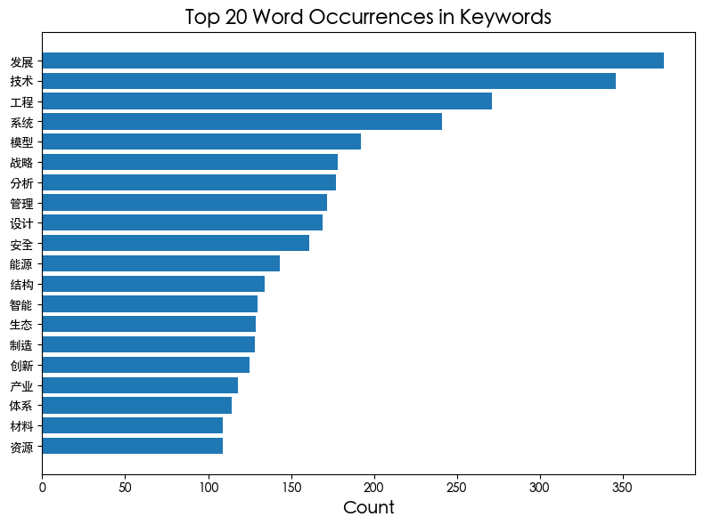
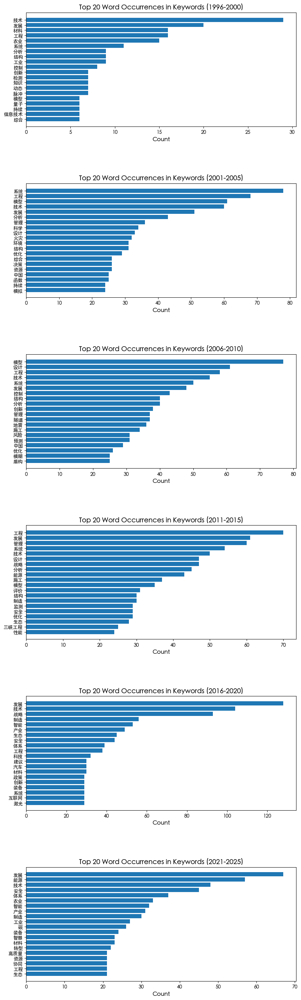

import pandas as pd
import json
import re
import jieba
import jieba.analyse
import cntext as ct
from collections import Counter
import matplotlib.pyplot as pltdf = pd.read_csv('/Users/dmitrijmazanik/Documents/Projects/cae_bulletin/cae_dataset.csv', delimiter=';')df.head()| year | 5_year_plan | article_title | author | author_number | abstract | keywords | keywords_number | |
|---|---|---|---|---|---|---|---|---|
| 0 | 1999 | 1996-2000 | 铁矿粉熔态还原冶炼的新流程 | 许志宏；王立新；杨章远；谢裕生；胥昌第；招冀 | 6 | 提出了一种直接用粉矿和煤的熔态还原炼铁新流程，其最大特点是消除污染产生源。为解决过去流化床铁... | 熔态还原；粉末；流化移动床；环境保护；技术改造 | 5.0 |
| 1 | 1999 | 1996-2000 | 具有容错结构的高可用计算机双系统研究 | 金士尧；胡华平；李宏亮 | 3 | 为了确保高的可用性，在重大工程实践中往往采用具有容错结构的计算机双系统。双系统处理得到两个结... | 可用性；双工系统；故障判别率；切入成功率 | 4.0 |
| 2 | 1999 | 1996-2000 | 石化工业的发展与催化技术 | 曹湘洪 | 1 | 催化技术是石化工业发展的技术基础，本文用燕山石化公司技术进步的实例及发展中面临的问题，论述了... | 石化工业 催化技术 | 1.0 |
| 3 | 1999 | 1996-2000 | 三峡大坝左厂3号坝段稳定性的数值分析和试验研究 | 任青文；余天堂；马良筠 | 3 | 三峡大坝左岸1#～5#厂房坝段稳定性是工程的关键问题之一。采用弹塑性块体元法对3#厂房坝段的... | 三峡大坝；弹塑性块体单元法；模型试验；稳定性分析 | 4.0 |
| 4 | 1999 | 1996-2000 | 化工装置材料损伤和寿命预测技术的研究 | 戴树和 | 1 | 文章综述了笔者及所在科研组近年来在化工静设备，如热交换器、塔器、反应器、工业炉、储槽、储罐（... | 化工设备；材料损伤；寿命预测 | 3.0 |
stopwords = ct.load_pkl_dict('STOPWORDS.pkl')['STOPWORDS']['chinese']
def clean_text(text):
if pd.isnull(text):
return ""
# Regular expression to remove non-Chinese characters
pattern = re.compile(r'[^\u4e00-\u9fa5]')
text = re.sub(pattern, '', text)
# Tokenize the text and remove stopwords
words = jieba.lcut(text)
words = [w for w in words if w not in stopwords]
return ' '.join(words)test = '大力加强科研机构与高等院校的联合与合作;;周光召1;中国科学院 副院长学部委员;长期以来,由于条块分割的体制,我国高等院校和中国科学院各自都走了一条封闭的、自成体系的道路,造成了科研和教学的严重脱节。社会各界对这种状况表示了极大关注和忧虑,中国科学院和高等院校也开始采取措施加强相互之间的联系和合作,包括互相兼职、互相开放实验室、互相代培研究生、开展合作研究,科学院请高校教师评议研究所和研究课题,高校也聘请科学院的科研人员任课和作学术报告等,收到了一定效果。但总的来说,这种联合和合作的步子还太小。'
clean_text(test)'大力加强 科研机构 高等院校 联合 合作 周光召 中国科学院 副 院长 学部委员 长期以来 条块分割 体制 我国 高等院校 中国科学院 走 一条 封闭 自成体系 道路 造成 科研 教学 严重 脱节 社会各界 这种 状况 表示 极大 关注 忧虑 中国科学院 高等院校 采取措施 加强 相互之间 联系 合作 包括 互相 兼职 互相 开放 实验室 互相 代培 研究生 开展 合作 研究 科学院 高校教师 评议 研究所 研究课题 高校 聘请 科学院 科研人员 任课 作 学术报告 收到 一定 效果 这种 联合 合作 步子 太小'df['keywords_tokenized'] = df['keywords'].apply(clean_text)
df.head()| year | 5_year_plan | article_title | author | author_number | abstract | keywords | keywords_number | keywords_tokenized | |
|---|---|---|---|---|---|---|---|---|---|
| 0 | 1999 | 1996-2000 | 铁矿粉熔态还原冶炼的新流程 | 许志宏；王立新；杨章远；谢裕生；胥昌第；招冀 | 6 | 提出了一种直接用粉矿和煤的熔态还原炼铁新流程，其最大特点是消除污染产生源。为解决过去流化床铁... | 熔态还原；粉末；流化移动床；环境保护；技术改造 | 5.0 | 熔态 还原 粉末 流化 移动 床 环境保护 技术改造 |
| 1 | 1999 | 1996-2000 | 具有容错结构的高可用计算机双系统研究 | 金士尧；胡华平；李宏亮 | 3 | 为了确保高的可用性，在重大工程实践中往往采用具有容错结构的计算机双系统。双系统处理得到两个结... | 可用性；双工系统；故障判别率；切入成功率 | 4.0 | 可用性 双工 系统故障 判别 率 切入 成功率 |
| 2 | 1999 | 1996-2000 | 石化工业的发展与催化技术 | 曹湘洪 | 1 | 催化技术是石化工业发展的技术基础，本文用燕山石化公司技术进步的实例及发展中面临的问题，论述了... | 石化工业 催化技术 | 1.0 | 石化工业 催化 技术 |
| 3 | 1999 | 1996-2000 | 三峡大坝左厂3号坝段稳定性的数值分析和试验研究 | 任青文；余天堂；马良筠 | 3 | 三峡大坝左岸1#～5#厂房坝段稳定性是工程的关键问题之一。采用弹塑性块体元法对3#厂房坝段的... | 三峡大坝；弹塑性块体单元法；模型试验；稳定性分析 | 4.0 | 三峡大坝 弹塑性 块体 单元 法 模型试验 稳定性 分析 |
| 4 | 1999 | 1996-2000 | 化工装置材料损伤和寿命预测技术的研究 | 戴树和 | 1 | 文章综述了笔者及所在科研组近年来在化工静设备，如热交换器、塔器、反应器、工业炉、储槽、储罐（... | 化工设备；材料损伤；寿命预测 | 3.0 | 化工设备 材料 损伤 寿命 预测 |
print(df) year 5_year_plan article_title \
0 1999 1996-2000 铁矿粉熔态还原冶炼的新流程
1 1999 1996-2000 具有容错结构的高可用计算机双系统研究
2 1999 1996-2000 石化工业的发展与催化技术
3 1999 1996-2000 三峡大坝左厂3号坝段稳定性的数值分析和试验研究
4 1999 1996-2000 化工装置材料损伤和寿命预测技术的研究
... ... ... ...
4246 2023 2021-2025 北斗卫星导航系统国际化应用总体策略研究
4247 2023 2021-2025 能源安全格局下新型电力系统发展战略框架
4248 2023 2021-2025 统筹空间科学、空间技术、空间应用协调发展的思考
4249 2023 2021-2025 我国空间应用发展总体构想
4250 2023 2021-2025 氨能应用现状与前景展望
author author_number \
0 许志宏；王立新；杨章远；谢裕生；胥昌第；招冀 6
1 金士尧；胡华平；李宏亮 3
2 曹湘洪 1
3 任青文；余天堂；马良筠 3
4 戴树和 1
... ... ...
4246 方宇菲，杨静帆，张文清，杨君琳 1
4247 汤广福；周静；庞辉；林俊杰；范征；吴亚楠；贺之渊；马士聪；薛峰；周保荣 10
4248 周建平；吴季 2
4249 李帅；申志强；侯宇葵；伏瑞敏；张拯宁；姜彬；孙慧洁；白照广；张庆君；戚发轫 10
4250 雍瑞生；杨川箬；薛明；聂凡；赵兴雷 5
abstract \
0 提出了一种直接用粉矿和煤的熔态还原炼铁新流程，其最大特点是消除污染产生源。为解决过去流化床铁...
1 为了确保高的可用性，在重大工程实践中往往采用具有容错结构的计算机双系统。双系统处理得到两个结...
2 催化技术是石化工业发展的技术基础，本文用燕山石化公司技术进步的实例及发展中面临的问题，论述了...
3 三峡大坝左岸1#～5#厂房坝段稳定性是工程的关键问题之一。采用弹塑性块体元法对3#厂房坝段的...
4 文章综述了笔者及所在科研组近年来在化工静设备，如热交换器、塔器、反应器、工业炉、储槽、储罐（...
... ...
4246 推动北斗卫星导航系统（北斗系统）实现国际化应用，是发挥北斗系统全球公共服务基础设施作用，让北...
4247 构建新型电力系统是实现碳达峰、碳中和战略目标，确保能源安全转型的关键路径；电力系统作为当前规...
4248 我国航天事业因历史原因和投入限制，在初期以空间技术、空间应用为主，对空间科学重视不足，空间科...
4249 空间应用指利用空间资源、空间资产及空间特殊条件，在地面或空间进行直接和间接的技术利用、产品生...
4250 氨能具有对化石能源的替代潜力且与可再生能源关系密切，推广应用氨能对我国能源未来发展具有重要价...
keywords keywords_number \
0 熔态还原；粉末；流化移动床；环境保护；技术改造 5.0
1 可用性；双工系统；故障判别率；切入成功率 4.0
2 石化工业 催化技术 1.0
3 三峡大坝；弹塑性块体单元法；模型试验；稳定性分析 4.0
4 化工设备；材料损伤；寿命预测 3.0
... ... ...
4246 全球卫星导航系统；北斗系统；国际化；应用；国际市场；跨越式发展 6.0
4247 能源安全；新型电力系统；应急预警；共享互济；安全防御；战略框架 6.0
4248 航天事业；空间科学；空间技术；空间应用；协调发展；数据开放共享 6.0
4249 空间应用体系；天地一体；应用工程；空间应用方向 4.0
4250 零碳燃料；氨能；储能；燃烧 4.0
keywords_tokenized
0 熔态 还原 粉末 流化 移动 床 环境保护 技术改造
1 可用性 双工 系统故障 判别 率 切入 成功率
2 石化工业 催化 技术
3 三峡大坝 弹塑性 块体 单元 法 模型试验 稳定性 分析
4 化工设备 材料 损伤 寿命 预测
... ...
4246 全球卫星 导航系统 北斗 系统 国际化 应用 国际 市场 跨越式 发展
4247 能源安全 新型 电力系统 应急 预警 共享 互济 安全 防御 战略 框架
4248 航天事业 空间科学 空间 技术 空间 应用 协调 发展 数据 开放 共享
4249 空间 应用 体系 天地 一体 应用 工程 空间 应用 方向
4250 零碳 燃料 氨能 储能 燃烧
[4251 rows x 9 columns]def count_word_occurrences(df):
# Create an empty list to store all tokenized keywords
all_keywords = []
# Iterate over the 'keywords_tokenized' column
for keywords in df['keywords_tokenized']:
# Split the tokenized keywords into a list of words
words = keywords.split()
# Extend the all_keywords list with the words
all_keywords.extend(words)
# Count the occurrences of each word
word_counts = Counter(all_keywords)
return word_countsword_counts = count_word_occurrences(df)print(word_counts)Counter({'发展': 375, '技术': 346, '工程': 271, '系统': 241, '模型': 192, '战略': 178, '分析': 177, '管理': 172, '设计': 169, '安全': 161, '能源': 143, '结构': 134, '智能': 130, '生态': 129, '制造': 128, '创新': 125, '产业': 118, '体系': 114, '材料': 109, '资源': 109, '中国': 109, '控制': 104, '农业': 100, '优化': 100, '风险': 95, '评价': 94, '持续': 92, '环境': 91, '模式': 91, '施工': 85, '装备': 80, '工业': 80, '综合': 80, '研究': 80, '空间': 78, '生物': 77, '应用': 76, '网络': 75, '预测': 73, '监测': 71, '海洋': 69, '建设': 69, '隧道': 68, '科技': 68, '地震': 68, '水': 67, '信息': 66, '绿色': 65, '卫星': 64, '科学': 64, '算法': 63, '方法': 62, '混凝土': 62, '模拟': 61, '法': 60, '开发': 60, '新': 58, '仿真': 58, '建议': 58, '协同': 58, '城市': 56, '火灾': 55, '计算': 55, '数值': 55, '规划': 54, '模糊': 53, '质量': 53, '理论': 53, '利用': 52, '动态': 52, '汽车': 52, '数据': 51, '激光': 50, '性能': 50, '经济': 50, '集成': 50, '应力': 50, '互联网': 50, '试验': 49, '参数': 49, '对策': 49, '检测': 48, '健康': 47, '决策': 46, '知识': 46, '过程': 46, '智慧': 46, '政策': 44, '复杂': 44, '铁路': 43, '文明': 43, '目标': 42, '碳': 42, '三峡工程': 42, '评估': 42, '融合': 42, '动力': 41, '膜': 41, '大桥': 41, '保障': 41, '动力学': 40, '生产': 40, '油气': 40, '函数': 40, '神经网络': 40, '分布': 40, '爆破': 39, '企业': 38, '区域': 38, '养殖': 38, '基础': 38, '特征': 37, '问题': 37, '效应': 37, '标准': 37, '化': 37, '转型': 37, '水资源': 36, '制造业': 36, '治理': 36, '加工': 35, '建筑': 35, '超': 35, '高': 35, '循环': 35, '型': 35, '量子': 34, '社会': 34, '全': 34, '节能': 34, '可靠性': 34, '平台': 34, '机制': 34, '关系': 34, '强国': 34, '复合': 33, '微': 33, '地质': 33, '路径': 33, '海上': 33, '服务': 32, '技术创新': 32, '钢': 32, '天然气': 32, '勘探': 32, '人工智能': 32, '发展趋势': 31, '交通': 31, '网': 31, '组织': 31, '方向': 31, '测量': 31, '新型': 31, '特性': 31, '遗传算法': 31, '因素': 31, '保护': 30, '振动': 30, '表面': 30, '探测': 30, '稳定性': 29, '寿命': 29, '高速': 29, '防治': 29, '桥梁': 29, '信息化': 29, '观测': 29, '盾构': 29, '中子': 29, '疲劳': 28, '燃料': 28, '处理': 28, '微波': 28, '现状': 28, '有限元': 28, '强度': 28, '裂缝': 28, '应急': 28, '机理': 27, '调度': 27, '式': 27, '变形': 27, '非线性': 27, '数字': 26, '腐蚀': 26, '可拓': 26, '影响': 26, '食物': 26, '热': 26, '关键技术': 26, '指标': 26, '污染': 26, '功能': 26, '革命': 26, '响应': 26, '悬索桥': 26, '风电': 26, '石油': 25, '虚拟': 25, '桩': 25, '能力': 25, '度': 25, '工艺': 25, '秦巴': 25, '山脉': 25, '耦合': 24, '纤维': 24, '遥感': 24, '航天': 24, '性': 24, '通信': 24, '地下': 24, '发电': 24, '策略': 24, '自主': 24, '措施': 24, '潜力': 24, '微生物': 24, '高质量': 24, '移动': 23, '国际': 23, '波': 23, '产品': 23, '升船机': 23, '新能源': 23, '燃料电池': 23, '系统工程': 23, '开采': 23, '适应': 23, '实验': 23, '数字化': 23, '金属': 22, '现代': 22, '深水': 22, '高效': 22, '脉冲': 22, '区': 22, '三维': 22, '项目': 22, '一体化': 22, '承载力': 22, '颠覆性': 22, '压力': 21, '清洁': 21, '时间': 21, '方程': 21, '煤炭': 21, '指标体系': 21, '器': 21, '合作': 21, '低碳': 21, '信息技术': 20, '大型': 20, '补偿': 20, '长江': 20, '演化': 20, '应变': 20, '实时': 20, '竞争力': 20, '指数': 20, '新一代': 20, '生物质': 20, '船舶': 20, '地区': 20, '运动': 19, '辐射': 19, '生态环境': 19, '气体': 19, '防护': 19, '水下': 19, '人工': 19, '定位': 19, '固体': 19, '分布式': 19, '驱动': 19, '高速铁路': 19, '深海': 19, '通道': 19, '三峡': 19, '原理': 19, '预警': 19, '物理': 19, '条件': 19, '速度': 19, '重大': 19, '减排': 19, '架构': 19, '沉降': 19, '基础设施': 19, '一带': 19, '一路': 19, '航空': 18, '智能化': 18, '雷达': 18, '流': 18, '爆炸': 18, '随机': 18, '全球': 18, '纳米': 18, '变换': 18, '误差': 18, '医学': 18, '能量': 18, '市场': 18, '科学技术': 18, '哲学': 18, '电池': 18, '相关': 18, '软件': 18, '温度': 18, '方案': 18, '斜拉桥': 18, '供应链': 18, '状态': 18, '国家': 18, '水产': 18, '新兴产业': 18, '框架': 17, '节水': 17, '识别': 17, '产业化': 17, '现代化': 17, '排放': 17, '废水': 17, '力学': 17, '环保': 17, '运行': 17, '共享': 17, '运输': 17, '组合': 17, '油田': 17, '物': 17, '乡村': 17, '气田': 17, '升级': 17, '产业链': 17, '损伤': 16, '化学': 16, '燃烧': 16, '建模': 16, '发动机': 16, '传感器': 16, '复合材料': 16, '机械': 16, '谱': 16, '氢': 16, '消费': 16, '数学模型': 16, '思维': 16, '生态系统': 16, '监控': 16, '标准化': 16, '诊断': 16, '实践': 16, '采矿': 16, '计划': 16, '支撑': 16, '双': 16, '灾害': 16, '氢能': 16, '水雾': 16, '路线': 16, '苏通': 16, '堆': 16, '关键': 16, '率': 15, '系数': 15, '冶金': 15, '密度': 15, '散射': 15, '方式': 15, '光学': 15, '海水': 15, '展望': 15, '细': 15, '比较': 15, '广义': 15, '预报': 15, '线性': 15, '稳定': 15, '育种': 15, '列车': 15, '信号': 15, '巨': 15, '开放': 15, '土': 15, '效果': 15, '无线': 15, '高性能': 15, '熵': 15, '概率': 15, '尺度': 15, '价值': 15, '项目管理': 15, '空气': 15, '导航': 15, '农产品': 15, '反应': 15, '流域': 15, '需求': 15, '海底隧道': 15, '汶川': 15, '联网': 15, '网络空间': 15, '单元': 14, '电子': 14, '有色金属': 14, '不确定性': 14, '流程': 14, '农村': 14, '薄膜': 14, '基': 14, '烟气': 14, '基本': 14, '改革': 14, '减灾': 14, '边坡': 14, '学习': 14, '模态': 14, '带': 14, '渗透': 14, '协调': 14, '分类': 14, '可视化': 14, '资源化': 14, '文化': 14, '低': 14, '物流': 14, '构造': 14, '医院': 14, '激光器': 13, '功率': 13, '治疗': 13, '西部': 13, '中心': 13, '柔性': 13, '场': 13, '冲刷': 13, '预防': 13, '矿山': 13, '频率': 13, '轨道交通': 13, '连续': 13, '快速': 13, '力': 13, '基因': 13, '分子': 13, '粒子': 13, '曲线': 13, '灌溉': 13, '钱学森': 13, '再生能源': 13, '修正': 13, '设备': 13, '定量': 13, '准则': 13, '选择': 13, '钻井': 13, '舰船': 13, '水库': 13, '高温': 13, '强化': 13, '群': 13, '周期': 13, '先进': 13, '研发': 13, '流动': 13, '照射': 13, '页岩': 13, '走': 13, '出去': 13, '网络安全': 13, '模型试验': 12, '地球': 12, '自动化': 12, '电力': 12, '云': 12, '推理': 12, '核能': 12, '计算机': 12, '超导': 12, '电力系统': 12, '飞机': 12, '大气': 12, '分配': 12, '行为': 12, '分离': 12, '开发利用': 12, '波浪': 12, '自动': 12, '支持': 12, '序列': 12, '氧化物': 12, '制度': 12, '能源安全': 12, '深度': 12, '几何': 12, '约束': 12, '测试': 12, '辅助': 12, '工程师': 12, '效率': 12, '解': 12, '规则': 12, '弹性': 12, '调查': 12, '分析法': 12, '直接': 12, '高端': 12, '协议': 12, '灰色': 12, '速率': 12, '离子': 12, '正交': 12, '改进': 12, '气': 12, '自然': 12, '断层': 12, '预见': 12, '直径': 12, '泰州': 12, '韧性': 12, '沉井': 12, '防控': 12, '碳达峰': 12, '环境保护': 11, '研究进展': 11, '高压': 11, '重点': 11, '免疫': 11, '混合': 11, '铜': 11, '光速': 11, '机器人': 11, '大坝': 11, '反应器': 11, '图': 11, '经验': 11, '扫描': 11, '食品': 11, '安全性': 11, '体': 11, '故障诊断': 11, '大成': 11, '边缘': 11, '教育': 11, '矩阵': 11, '吸附': 11, '挑战': 11, '电磁': 11, '柴油': 11, '岩溶': 11, '岩体': 11, '成形': 11, '气候变化': 11, '统计': 11, '污染物': 11, '海底': 11, '深部': 11, '人才': 11, '原则': 11, '事件': 11, '道路': 11, '通风': 11, '成型': 11, '石墨': 11, '级': 11, '领域': 11, '压裂': 11, '安装': 11, '公共卫生': 11, '注浆': 11, '制氢': 11, '横沙': 11, '妊娠': 11, '矿产资源': 11, '催化': 10, '发射': 10, '液体': 10, '辐射计': 10, '岩石': 10, '交换': 10, '核': 10, '坝': 10, '仿生': 10, '相': 10, '抗': 10, '扩展': 10, '变化': 10, '逻辑': 10, '优选': 10, '发现': 10, '联产': 10, '代理': 10, '临界': 10, '成本': 10, '抗震': 10, '平衡': 10, '注水': 10, '装置': 10, '复杂性': 10, '位移': 10, '地质灾害': 10, '形式': 10, '事故': 10, '整体': 10, '拆除': 10, '半': 10, '管道': 10, '等效': 10, '增强': 10, '调整': 10, '地层': 10, '疾病': 10, '最小': 10, '学': 10, '趋势': 10, '储层': 10, '无人': 10, '数据挖掘': 10, '风险管理': 10, '国际化': 10, '场景': 10, '中医': 10, '芯片': 10, '加固': 10, '疏散': 10, '理念': 10, '公共': 10, '埋': 10, '联合': 10, '综合利用': 10, '油气田': 10, '泥水': 10, '人才培养': 10, '风电场': 10, '种业': 10, '战略性': 10, '成像': 9, '半导体': 9, '液压': 9, '活性': 9, '转化': 9, '显示': 9, '主动': 9, '高度计': 9, '超声': 9, '类型': 9, '信息处理': 9, '模糊控制': 9, '工作': 9, '海洋工程': 9, '堆石坝': 9, '相对论': 9, '负荷': 9, '控制系统': 9, '前景': 9, '干扰': 9, '合金': 9, '同步': 9, '优势': 9, '浅': 9, '水平': 9, '结构调整': 9, '解析': 9, '并行': 9, '提升': 9, '匹配': 9, '地下水': 9, '煤': 9, '梁': 9, '断裂': 9, '轴承': 9, '微观': 9, '主': 9, '恢复': 9, '工业化': 9, '防灾': 9, '制备': 9, '分形': 9, '路由': 9, '故障': 9, '机构': 9, '矿床': 9, '可靠': 9, '工程项目': 9, '界面': 9, '超临界': 9, '氧化': 9, '水电站': 9, '极地': 9, '信息系统': 9, '格局': 9, '重构': 9, '轨道': 9, '医疗': 9, '拓扑': 9, '感知': 9, '定标': 9, '启示': 9, '硼': 9, '路线图': 9, '应对': 9, '普光': 9, '现场': 9, '精密': 9, '催化剂': 8, '导流': 8, '长江口': 8, '集装箱': 8, '温室': 8, '炸药': 8, '活动': 8, '植物': 8, '生长': 8, '润滑': 8, '细胞': 8, '荷载': 8, '体系结构': 8, '钢管': 8, '转换': 8, '概念': 8, '地面': 8, '人员': 8, '精度': 8, '集合': 8, '有效': 8, '起爆': 8, '电解': 8, '相变': 8, '系统集成': 8, '硅': 8, '介质': 8, '成分': 8, '水质': 8, '天气': 8, '破碎': 8, '值': 8, '控制器': 8, '船闸': 8, '进展': 8, '弯曲': 8, '统一': 8, '能源技术': 8, '图像': 8, '低温': 8, '验证': 8, '投资': 8, '作物': 8, '柱': 8, '进化': 8, '合理': 8, '鱼类': 8, '工程技术': 8, '学科': 8, '刚度': 8, '支承': 8, '并联': 8, '耦': 8, '方法论': 8, '传输': 8, '布局': 8, '光纤': 8, '湍流': 8, '总体': 8, '循环水': 8, '反馈': 8, '线': 8, '安全系数': 8, '传统': 8, '层次': 8, '认证': 8, '钛': 8, '集': 8, '输送': 8, '储能': 8, '反演': 8, '电机': 8, '融资': 8, '木材': 8, '青藏高原': 8, '纺织': 8, '颗粒': 8, '再生': 8, '源': 8, '调控': 8, '聚类': 8, '现代农业': 8, '玻璃': 8, '体积': 8, '中医药': 8, '多维': 8, '思考': 8, '强震': 8, '水力': 8, '维修': 8, '防御': 8, '汽车产业': 8, '高强度': 8, '预应力': 8, '板': 8, '铝合金': 8, '中国航天': 8, '回收': 8, '桥面': 8, '盆地': 8, '伦理': 8, '支护': 8, '可控': 8, '供需': 8, '生命周期': 8, '水污染': 8, '钢箱梁': 8, '俘获': 8, '产业政策': 8, '砂': 8, '适应性': 8, '任务': 8, '渤海海峡': 8, '粮食安全': 8, '管控': 8, '京津冀': 8, '北斗': 8, '形状': 7, '分层': 7, '合成': 7, '疫苗': 7, '无损': 7, '微波遥感': 7, '计': 7, '航道': 7, '编码': 7, '定理': 7, '未来': 7, '武器': 7, '飞行器': 7, '传播': 7, '负': 7, '碾压': 7, '设施': 7, '加速器': 7, '营养': 7, '有机': 7, '载人': 7, '电流': 7, '沙尘暴': 7, '毫米波': 7, '分解': 7, '特点': 7, '轮轨': 7, '作用': 7, '构想': 7, '交通运输': 7, '建筑物': 7, '南海': 7, '决策支持系统': 7, '阶段': 7, '改造': 7, '汽油': 7, '惰性': 7, '光伏': 7, '焊接': 7, '力学性能': 7, '轨': 7, '管理体系': 7, '地铁': 7, '研制': 7, '有限': 7, '矢量': 7, '顶': 7, '变频': 7, '关联': 7, '危险性': 7, '模式识别': 7, '水利水电': 7, '光': 7, '灭火': 7, '类': 7, '冲击': 7, '气动': 7, '地下工程': 7, '星座': 7, '示范': 7, '效益': 7, '跟踪': 7, '节流': 7, '聚合物': 7, '滑动': 7, '估计': 7, '太阳能': 7, '突发': 7, '原位': 7, '时空': 7, '单位': 7, '鲁棒性': 7, '大菱鲆': 7, '管理系统': 7, '污水': 7, '扩散': 7, '浓度': 7, '西北地区': 7, '成因': 7, '主体': 7, '供给': 7, '树': 7, '相关性': 7, '核心': 7, '矿': 7, '形成': 7, '管理模式': 7, '群体': 7, '博弈': 7, '电极': 7, '交流': 7, '协作': 7, '要素': 7, '沉积': 7, '阈值': 7, '强': 7, '网格': 7, '浇筑': 7, '推进': 7, '破坏': 7, '围岩': 7, '斜': 7, '定向': 7, '活性剂': 7, '理论体系': 7, '预': 7, '管片': 7, '能耗': 7, '极限': 7, '子': 7, '冷却': 7, '基准': 7, '运载': 7, '子宫': 7, '铺装': 7, '镍': 7, '捕集': 7, '钢桥': 7, '南京': 7, '重力': 7, '规律': 7, '载荷': 7, '道': 7, '预处理': 7, '情景': 7, '模块化': 7, '重金属': 7, '开挖': 7, '饮用水': 7, '拼装': 7, '选址': 7, '转变': 7, '三塔': 7, '封存': 7, '病害': 7, '光谱': 7, '供应': 7, '建造': 7, '致密': 7, '政府': 7, '行业': 7, '服务业': 7, '固体废物': 7, '草地': 7, '经济带': 7, '红外': 6, '聚合': 6, '世纪': 6, '运载火箭': 6, '系列': 6, '失效': 6, '净化': 6, '湖泊': 6, '反': 6, '导弹': 6, '定性': 6, '上海': 6, '地理信息系统': 6, '提取': 6, '裂解': 6, '航天器': 6, '大气污染': 6, '钢板': 6, '变': 6, '环境污染': 6, '重建': 6, '横向': 6, '大规模': 6, '对称': 6, '异常': 6, '逼近': 6, '面板': 6, '冲击波': 6, '电': 6, '最佳': 6, '形势': 6, '二次': 6, '获取': 6, '点': 6, '高技术': 6, '土壤': 6, '专家系统': 6, '检验': 6, '比例': 6, '齿轮': 6, '途径': 6, '衰减': 6, '语言': 6, '真空': 6, '业务': 6, '水合物': 6, '屈服': 6, '高功率': 6, '隶属': 6, '永磁': 6, '用水': 6, '分组': 6, '综述': 6, '阴极': 6, '原料': 6, '面源': 6, '排水': 6, '橡胶': 6, '等离子体': 6, '计算方法': 6, '聚变': 6, '种质': 6, '管理科学': 6, '核电': 6, '调速': 6, '电压': 6, '等级': 6, '增殖': 6, '格式': 6, '钻孔': 6, '区间': 6, '生物质能': 6, '液化': 6, '湿地': 6, '层': 6, '灵敏度': 6, '选型': 6, '粗糙集': 6, '测控': 6, '判据': 6, '静': 6, '摩擦系数': 6, '导航系统': 6, '物质': 6, '资料': 6, '树脂': 6, '结合': 6, '水电': 6, '元': 6, '水稻': 6, '内容': 6, '射流': 6, '机组': 6, '进步': 6, '独立': 6, '加速': 6, '迁移': 6, '原子': 6, '品牌': 6, '平面': 6, '演变': 6, '岩爆': 6, '单': 6, '耐久性': 6, '磁': 6, '降水': 6, '气候': 6, '激励': 6, '生活': 6, '嵌入式': 6, '城际': 6, '马尔可夫': 6, '配置': 6, '算子': 6, '车辆': 6, '构件': 6, '二维': 6, '梯度': 6, '布置': 6, '火': 6, '煤化工': 6, '前沿': 6, '救援': 6, '和谐': 6, '耕地': 6, '载波': 6, '巷道': 6, '干细胞': 6, '相似': 6, '期权': 6, '属性': 6, '鉴别': 6, '发生': 6, '人工神经网络': 6, '改性': 6, '技术标准': 6, '车': 6, '食品安全': 6, '淡化': 6, '残余': 6, '实现': 6, '有限元法': 6, '多孔': 6, '多项式': 6, '锚固': 6, '上海港': 6, '重载': 6, '裂纹': 6, '粗糙': 6, '公式': 6, '风云': 6, '装药': 6, '煤层气': 6, '本质': 6, '人体': 6, '均衡': 6, '老化': 6, '电解质': 6, '非常规': 6, '合同': 6, '工程建设': 6, '风': 6, '修复': 6, '富水': 6, '酸性': 6, '卵石': 6, '电网': 6, '风力': 6, '风机': 6, '养护': 6, '沉积物': 6, '战略规划': 6, '变革': 6, '桥梁工程': 6, '器型': 6, '疗法': 6, '临床': 6, '南极': 6, '塔柱': 6, '高精度': 6, '跨海': 6, '运营': 6, '东滩': 6, '避孕': 6, '金融': 6, '监管': 6, '德尔菲': 6, '粮食': 6, '碳中': 6, '互联网安全': 6, '还原': 5, '器件': 5, '炼油': 5, '机电': 5, '视觉': 5, '重': 5, '通航': 5, '疏浚': 5, '火箭': 5, '电磁波': 5, '体外': 5, '整治': 5, '黄河': 5, '权重': 5, '分辨': 5, '机': 5, '相互作用': 5, '加速度': 5, '更新': 5, '共振': 5, '添加剂': 5, '铀': 5, '渔业': 5, '洪水': 5, '质子': 5, '地理': 5, '化肥': 5, '品种': 5, '缺陷': 5, '天线': 5, '直升机': 5, '钢铁工业': 5, '膜分离': 5, '过渡': 5, '自动机': 5, '洁净煤': 5, '陶瓷': 5, '成果': 5, '蓄能': 5, '凝固': 5, '突破': 5, '相对': 5, '容量': 5, '乙醇': 5, '阳极': 5, '铝电解': 5, '抗干扰': 5, '乙烯': 5, '钛合金': 5, '双层': 5, '局部': 5, '半径': 5, '收缩': 5, '二氧化碳': 5, '全球化': 5, '仪器': 5, '变量': 5, '热电': 5, '品质': 5, '钢铁': 5, '热解': 5, '形': 5, '流体': 5, '熔炼': 5, '矿井': 5, '聚乙烯': 5, '特征提取': 5, '数': 5, '宏观': 5, '原型': 5, '超声速': 5, '节能降耗': 5, '降解': 5, '固化': 5, '虚拟企业': 5, '典型': 5, '创意': 5, '世界': 5, '瓶颈': 5, '波长': 5, '路由器': 5, '机遇': 5, '高速公路': 5, '交通系统': 5, '军事': 5, '无废': 5, '浅滩': 5, '地基': 5, '局域网': 5, '段': 5, '链': 5, '均匀': 5, '岩浆': 5, '创造性': 5, '渗': 5, '最优': 5, '样机': 5, '煤层': 5, '港口': 5, '土地利用': 5, '电动汽车': 5, '机床': 5, '本体': 5, '岩土': 5, '围堰': 5, '药物': 5, '有效性': 5, '多普勒': 5, '干旱': 5, '狭义': 5, '水电工程': 5, '热处理': 5, '流场': 5, '稳健': 5, '塑性': 5, '剂': 5, '研讨': 5, '料': 5, '同步电机': 5, '最大': 5, '风速': 5, '依赖': 5, '鲁棒控制': 5, '互补': 5, '隔震': 5, '初始': 5, '委托': 5, '太阳电池': 5, '负载': 5, '表征': 5, '产业结构': 5, '烟': 5, '水源': 5, '钢筋': 5, '预制': 5, '油': 5, '干燥': 5, '侧': 5, '天基': 5, '锚': 5, '碇': 5, '河流': 5, '深孔': 5, '中长期': 5, '水土资源': 5, '处置': 5, '节点': 5, '校正': 5, '矿物': 5, '建设项目': 5, '砂岩': 5, '抗衰': 5, '感应': 5, '驾驶': 5, '弹射': 5, '发生器': 5, '二极管': 5, '京津': 5, '析出': 5, '一号': 5, '量化': 5, '铟': 5, '客运专线': 5, '勘察': 5, '配套': 5, '稠油': 5, '超前': 5, '综合治理': 5, '轻量化': 5, '井': 5, '演进': 5, '鞍座': 5, '钢塔': 5, '猫': 5, '荧光': 5, '投融资': 5, '传感': 5, '采油': 5, '成藏': 5, '核心技术': 5, '经济性': 5, '肿瘤': 5, '集群': 5, '反应堆': 5, '三号': 5, '第四': 5, '土地': 5, '城镇化': 5, '动物': 5, '多元': 5, '二号': 5, '核电厂': 5, '深水港': 5, '金川': 5, '反渗透': 5, '硫化物': 5, '铜镍': 5, '找矿': 5, '碳汇': 5, '种养': 5, '城乡': 5, '公园': 5, '共性': 5, '医学教育': 5, '长寿命': 5, '资产': 5, '环境质量': 5, '城市群': 5, '天地': 5, '社区': 5, '矿产': 5, '冠状病毒': 5, '肺炎': 5, '消纳': 5, '黄河流域': 5, '床': 4, '石化工业': 4, '块体': 4, '位': 4, '林业': 4, '作战': 4, '控制论': 4, '人口': 4, '信息网络': 4, '石化': 4, '固结': 4, '脱硫': 4, '磷': 4, '水泥': 4, '淤积': 4, '滑坡': 4, '可行性': 4, '聚焦': 4, '管线': 4, '膨化': 4, '硝酸铵': 4, '防洪': 4, '近': 4, '显微镜': 4, '生成': 4, '加密': 4, '存在': 4, '硫化': 4, '低成本': 4, '调节剂': 4, '地图': 4, '尾矿': 4, '阻力': 4, '牵引': 4, '并行处理': 4, '超深': 4, '钢结构': 4, '快子': 4, '在线': 4, '拱坝': 4, '放射性': 4, '同位素': 4, '束': 4, '规模': 4, '浸出': 4, '叶片': 4, '片': 4, '锗': 4, '压': 4, '农作物': 4, '视频': 4, '精确': 4, '反射': 4, '氨': 4, '因子': 4, '人造': 4, '切削': 4, '系': 4, '密码': 4, '混沌': 4, '射线': 4, '量': 4, '内涵': 4, '农药': 4, '概念设计': 4, '质': 4, '适应控制': 4, '政策法规': 4, '飞行': 4, '知识库': 4, '供电': 4, '藏': 4, '泥沙': 4, '输移': 4, '化工': 4, '充填': 4, '组': 4, '时变': 4, '成就': 4, '神经': 4, '滤波器': 4, '聚能': 4, '间距': 4, '攻击': 4, '渗流': 4, '厚度': 4, '储备': 4, '极值': 4, '简化': 4, '工艺流程': 4, '粘度': 4, '显微': 4, '硬度': 4, '钽': 4, '曲率': 4, '正': 4, '阻燃': 4, '不可': 4, '地球物理': 4, '滑模': 4, '观': 4, '新工艺': 4, '码': 4, '复用': 4, '回路': 4, '测定': 4, '下降': 4, '光子': 4, '组成': 4, '开发技术': 4, '历史': 4, '连铸': 4, '照明': 4, '涂层': 4, '断面': 4, '拟合': 4, '静压': 4, '监测技术': 4, '度量': 4, '材料科学': 4, '河段': 4, '程序': 4, '旱区': 4, '思想': 4, '国外': 4, '专用': 4, '同化': 4, '思路': 4, '总线': 4, '截流': 4, '数据库': 4, '思维科学': 4, '摩擦': 4, '小型': 4, '电梯': 4, '状况': 4, '发光': 4, '制约': 4, '超高': 4, '土石方': 4, '线性规划': 4, '维': 4, '地形': 4, '侵彻': 4, '管理体制': 4, '实物': 4, '累积': 4, '入侵': 4, '深井': 4, '铝': 4, '挖掘': 4, '立法': 4, '蛋白': 4, '拉伸': 4, '本构': 4, '曝气': 4, '稳态': 4, '系统分析': 4, '进口': 4, '附加': 4, '阻尼': 4, '温度控制': 4, '差分': 4, '系统安全': 4, '大块': 4, '积分': 4, '经济效益': 4, '设置': 4, '增长': 4, '释放': 4, '聚类分析': 4, '骨髓': 4, '厅': 4, '基质': 4, '熔盐': 4, '平均': 4, '加压': 4, '锌': 4, '滤波': 4, '气象卫星': 4, '偏析': 4, '以太网': 4, '冗余': 4, '搜索': 4, '铅': 4, '硫': 4, '发电机组': 4, '磁场': 4, '成矿': 4, '经络': 4, '调制': 4, '访问控制': 4, '业主': 4, '旋转': 4, '硬化': 4, '经营': 4, '发展观': 4, '形态': 4, '分辨率': 4, '提升机': 4, '代数': 4, '高强': 4, '环境友好': 4, '素质': 4, '探讨': 4, '案例': 4, '灌浆': 4, '竞争': 4, '施工进度': 4, '气象': 4, '贝叶斯': 4, '流变': 4, '厂房': 4, '创造力': 4, '中药': 4, '粉碎': 4, '经济学': 4, '月球': 4, '大豆': 4, '颤振': 4, '热辐射': 4, '营销': 4, '震动': 4, '灭火剂': 4, '水文': 4, '二乘': 4, '跨径': 4, '串联': 4, '费用': 4, '分区': 4, '桩基础': 4, '规划设计': 4, '临震': 4, '方': 4, '活塞': 4, '无源': 4, '基地': 4, '水分': 4, '富集': 4, '塔': 4, '防撞': 4, '过滤': 4, '计量': 4, '传递': 4, '直流': 4, '高频': 4, '公共安全': 4, '凝胶': 4, '信息安全': 4, '向量': 4, '台阶': 4, '危险': 4, '纳滤': 4, '诱导': 4, '交叉': 4, '堰塞湖': 4, '拱': 4, '硬': 4, '核燃料': 4, '压水堆': 4, '核电站': 4, '数据中心': 4, '垂直': 4, '厦门': 4, '钻': 4, '挤': 4, '软弱': 4, '拉索': 4, '推': 4, '合龙': 4, '箱梁': 4, '走廊': 4, '效能': 4, '论证': 4, '测距': 4, '编制': 4, '动车组': 4, '弹药': 4, '作业': 4, '控制技术': 4, '含硫': 4, '射孔': 4, '竖井': 4, '台风': 4, '暴雨': 4, '超滤': 4, '中间': 4, '钻机': 4, '近海': 4, '沥青': 4, '钢产量': 4, '役': 4, '滇池': 4, '太湖': 4, '湖': 4, '风能': 4, '旱地农业': 4, '建设工程': 4, '经济社会': 4, '心墙': 4, '煤矿': 4, '膨胀': 4, '分级': 4, '确定性': 4, '架设': 4, '前缘': 4, '胶质瘤': 4, '国内外': 4, '燃煤': 4, '总量': 4, '超大': 4, '联动': 4, '横梁': 4, '贝雷架': 4, '增材': 4, '定轨': 4, '激光测距': 4, '重整': 4, '半滑': 4, '舌鳎': 4, '汽化': 4, '高分子': 4, '烯': 4, '育龄妇女': 4, '人工流产': 4, '流产': 4, '联': 4, '胎儿': 4, '宫内': 4, '双相': 4, '热轧': 4, '修理': 4, '保障体系': 4, '体制': 4, '煤制': 4, '电解水': 4, '雷管': 4, '禀赋': 4, '十三': 4, '储量': 4, '态势': 4, '举措': 4, '生产力': 4, '种植业': 4, '丝绸之路': 4, '拟态': 4, '身份': 4, '成熟度': 4, '高通量': 4, '全民': 4, '护理': 4, '卫生': 4, '盐湖': 4, '长三角': 4, '养老': 4, '范式': 4, '贸易': 4, '通用': 4, '农机': 4, '保护地': 4, '技术装备': 4, '孪生': 4, '减污降': 4, '医用': 4, '双循环': 4, '双碳': 4, '熔态': 3, '粉末': 3, '技术改造': 3, '可用性': 3, '系统故障': 3, '重力场': 3, '西藏': 3, '隐身': 3, '合成橡胶': 3, '重油': 3, '知识经济': 3, '抗体': 3, '冷': 3, '遥控': 3, '湿法': 3, '长江三峡工程': 3, '饲料': 3, '氮': 3, '摆': 3, '枢纽港': 3, '晶体': 3, '核聚变': 3, '生态农业': 3, '小浪底': 3, '化学工业': 3, '坐标': 3, '天然': 3, '核磁共振': 3, '微结构': 3, '宽度': 3, '水轮机': 3, '磨蚀': 3, '中央': 3, '扰动': 3, '三十': 3, '烷醇': 3, '造船': 3, '气垫': 3, '逆变器': 3, '结点': 3, '墙': 3, '潜水器': 3, '尺寸': 3, '粗糙度': 3, '矛盾': 3, '蓝色': 3, '势': 3, '正电子': 3, '信息科学': 3, '工程设计': 3, '板形': 3, '压力容器': 3, '抗爆': 3, '行星': 3, '发酵': 3, '冲突': 3, '集成电路': 3, '细菌': 3, '开裂': 3, '杂质': 3, '生物工程': 3, '覆盖': 3, '移植': 3, '滩涂': 3, '调节': 3, '京沪高速铁路': 3, '发展前景': 3, '改良': 3, '需求预测': 3, '电弧': 3, '归纳': 3, '森林': 3, '磁悬浮列车': 3, '金刚石': 3, '永久': 3, '刀具': 3, '放电': 3, '间隙': 3, '北部': 3, '化生': 3, '克隆': 3, '基因组': 3, '沉管': 3, '抽水': 3, '电站': 3, '壳': 3, '缝': 3, '移民': 3, '数控机床': 3, '电子束': 3, '箍': 3, '缩': 3, '稀土': 3, '第三代': 3, '码分多址': 3, '高新技术': 3, '三元': 3, '膳食': 3, '核辐射': 3, '基因工程': 3, '海洋生物': 3, '玉米': 3, '酶': 3, '可拓学': 3, '淤泥': 3, '噪声': 3, '自动控制': 3, '多功能': 3, '多相': 3, '大跨': 3, '空间结构': 3, '淬火': 3, '数量': 3, '科学决策': 3, '视线': 3, '参数估计': 3, '自然资源': 3, '展开': 3, '波导': 3, '期': 3, '低压': 3, '热泵': 3, '多年冻土': 3, '系统论': 3, '静态': 3, '区划': 3, '蒸汽': 3, '蒸发': 3, '沙': 3, '块': 3, '连轧': 3, '张力': 3, '顶板': 3, '西调': 3, '水循环': 3, '运动学': 3, '纳米技术': 3, '维护': 3, '山水': 3, '防': 3, '氟': 3, '马克思主义': 3, '支线': 3, '现象': 3, '瓦斯': 3, '突出': 3, '高能': 3, '粗集': 3, '废气': 3, '变暖': 3, '化学品': 3, '业': 3, '生物膜': 3, '光纤通信': 3, '冶炼': 3, '海峡': 3, '边界层': 3, '锂离子': 3, '还原论': 3, '声': 3, '带宽': 3, '泥': 3, '岛': 3, '枢纽': 3, '长大': 3, '脱轨': 3, '方位': 3, '水力资源': 3, '采集': 3, '投资决策': 3, '供水': 3, '含水量': 3, '数控': 3, '可变': 3, '二阶': 3, '矩': 3, '双库': 3, '阵列': 3, '降温': 3, '弯道': 3, '毒性': 3, '材': 3, '总体设计': 3, '科技人才': 3, '加权': 3, '早期': 3, '物元': 3, '波粒二象性': 3, '原油': 3, '勘查': 3, '人类': 3, '服役': 3, '治沙': 3, '辉光': 3, '水利': 3, '铁路运输': 3, '处理器': 3, '现实': 3, '低频': 3, '长度': 3, '模糊数学': 3, '横': 3, '离合器': 3, '水压': 3, '利用率': 3, '碳循环': 3, '嵌入': 3, '碳酸盐岩': 3, '索塔': 3, '肝脏': 3, '调配': 3, '石油化工': 3, '信息熵': 3, '最优化': 3, '背景': 3, '滚动轴承': 3, '工程施工': 3, '零件': 3, '撞击': 3, '运行机制': 3, '毒素': 3, '多样性': 3, '果树': 3, '焦化': 3, '径向': 3, '实例': 3, '定律': 3, '常数': 3, '奥运': 3, '细化': 3, '电子显微镜': 3, '离子束': 3, '海岸带': 3, '小麦': 3, '严格': 3, '雪崩': 3, '集中': 3, '点燃': 3, '有序': 3, '遗传': 3, '移动机器人': 3, '障碍': 3, '烯烃': 3, '时域': 3, '螺旋': 3, '养殖场': 3, '受限': 3, '完全': 3, '缓坡': 3, '输水': 3, '卡尔曼滤波': 3, '弹簧': 3, '水面': 3, '独头': 3, '灰数': 3, '定义': 3, '东北': 3, '管网': 3, '吸力': 3, '产品开发': 3, '盐': 3, '共赢': 3, '体制改革': 3, '产权': 3, '租赁': 3, '自然灾害': 3, '峰值': 3, '一阶': 3, '链路': 3, '密钥': 3, '难': 3, '模糊集': 3, '频域': 3, '高耗能': 3, '抽取': 3, '大庆油田': 3, '弹丸': 3, '装甲': 3, '地壳': 3, '认知': 3, '秸秆': 3, '轴': 3, '乘法': 3, '纠缠': 3, '动量': 3, '油池': 3, '模量': 3, '压缩': 3, '损失': 3, '转向': 3, '操纵': 3, '搅拌': 3, '蚁群': 3, '多体': 3, '退火': 3, '史': 3, '鼠疫': 3, '温差': 3, '曲面': 3, '隧洞': 3, '最优控制': 3, '叠加': 3, '模糊推理': 3, '集团': 3, '连锁': 3, '松弛': 3, '抽样': 3, '探测器': 3, '采购': 3, '非对称': 3, '破裂': 3, '次': 3, '语音': 3, '给水管': 3, '各向异性': 3, '蔓延': 3, '天人合一': 3, '口': 3, '排烟': 3, '连接': 3, '三相': 3, '绩效': 3, '海': 3, '互动': 3, '水利枢纽': 3, '风化': 3, '帷幕': 3, '液': 3, '土木工程': 3, '时延': 3, '流化床': 3, '信息管理': 3, '剪切': 3, '历程': 3, '危险源': 3, '城市规划': 3, '输出': 3, '活性炭': 3, '高层建筑': 3, '上部': 3, '嫦娥': 3, '数据共享': 3, '战略重点': 3, '信号处理': 3, '登月': 3, '处理工艺': 3, '空时': 3, '距离': 3, '喷淋': 3, '通量': 3, '高程': 3, '差异': 3, '门': 3, '限值': 3, '地球化学': 3, '气溶胶': 3, '空调': 3, '认识': 3, '定制': 3, '相容': 3, '线路': 3, '角': 3, '创新能力': 3, '结晶': 3, '电动': 3, '学科建设': 3, '尿激酶': 3, '纤溶': 3, '酶原': 3, '激活剂': 3, '内膜': 3, '粘弹性': 3, '甲烷': 3, '双向': 3, '划分': 3, '海相': 3, '缆索': 3, '射频': 3, '吸收': 3, '座椅': 3, '浮选': 3, '煤炭行业': 3, '涡流': 3, '试验台': 3, '样条': 3, '轨迹': 3, '年龄': 3, '特低': 3, '时代': 3, '阻尼器': 3, '溶剂': 3, '切割': 3, '流形': 3, '封闭': 3, '水利工程': 3, '鉴定': 3, '迭代': 3, '钢吊箱': 3, '亚': 3, '实时控制': 3, '部件': 3, '受力': 3, '电源': 3, '专业': 3, '守恒': 3, '威胁': 3, '制导': 3, '不稳定性': 3, '日本': 3, '三峡库区': 3, '木质': 3, '夹层': 3, '电缆': 3, '远程': 3, '随机振动': 3, '构建': 3, '市场化': 3, '绩效评价': 3, '矿区': 3, '法律': 3, '波动': 3, '电导率': 3, '离群': 3, '微粒': 3, '铁路桥梁': 3, '纳': 3, '农田': 3, '箱': 3, '快堆': 3, '聚': 3, '氘': 3, '战略地位': 3, '可持续性': 3, '裂变': 3, '水平井': 3, '西南地区': 3, '南方': 3, '极化': 3, '探测仪': 3, '追踪': 3, '采收率': 3, '翔安': 3, '爆法': 3, '工序': 3, '扩': 3, '灌注桩': 3, '比选': 3, '公路': 3, '群桩': 3, '跨': 3, '跨度': 3, '羧酸': 3, '川': 3, '地震预报': 3, '震': 3, '束流': 3, '虚实': 3, '西': 3, '宜万': 3, '溶洞': 3, '发育': 3, '降压': 3, '适用性': 3, '安保': 3, '分段': 3, '套管': 3, '掘进': 3, '长距离': 3, '鲆': 3, '鲽': 3, '法则': 3, '旅游': 3, '虚拟现实': 3, '储运': 3, '漂浮': 3, '输电': 3, '平原': 3, '线形': 3, '规格': 3, '股': 3, '主缆': 3, '巡检': 3, '大中型': 3, '火山岩': 3, '河道': 3, '顺序': 3, '深': 3, '肥': 3, '车辙': 3, '吊装': 3, '超大型': 3, '碰撞': 3, '干': 3, '除湿': 3, '太湖流域': 3, '集约化': 3, '渤海': 3, '白洋淀': 3, '联苯': 3, '珠江三角洲': 3, '人均': 3, '鄱阳湖': 3, '易': 3, '路基': 3, '特色': 3, '油藏': 3, '水驱': 3, '沼气': 3, '农林': 3, '收集': 3, '地位': 3, '产能': 3, '塑料': 3, '形变': 3, '盘': 3, '监测网': 3, '环': 3, '高铁': 3, '冻结': 3, '整合': 3, '抗拔': 3, '性质': 3, '端': 3, '环氧': 3, '选择性': 3, '网络化': 3, '极端': 3, '北极': 3, '利用效率': 3, '水土': 3, '利益': 3, '抛丸': 3, '建筑工程': 3, '以人为本': 3, '湿度计': 3, '离子交换': 3, '保护区': 3, '辽河流域': 3, '演算法': 3, '等高线': 3, '金三角': 3, '新港': 3, '中空': 3, '精细': 3, '离散': 3, '完善': 3, '退化': 3, '激素': 3, '精准': 3, '膜技术': 3, '定价': 3, '慢性病': 3, '纤维素': 3, '感染': 3, '剖宫产': 3, '瘢痕': 3, '术': 3, '优生': 3, '出生': 3, '孕前': 3, '节育器': 3, '疏水': 3, '加氢': 3, '维修性': 3, '保障性': 3, '备件': 3, '大国': 3, '服务型': 3, '网多': 3, '站': 3, '规模化': 3, '进度': 3, '生育': 3, '卵泡': 3, '实施': 3, '能效': 3, '海洋环境': 3, '重大意义': 3, '美国': 3, '煤炭资源': 3, '扩增': 3, '专利': 3, '秦巴山区': 3, '空间规划': 3, '扶贫': 3, '新区': 3, '主权': 3, '主动防御': 3, '工具': 3, '医药卫生': 3, '愿景': 3, '使能': 3, '市场需求': 3, '抗生素': 3, '天': 3, '空气质量': 3, '渐进法': 3, '诊疗': 3, '追溯': 3, '工厂': 3, '内燃机': 3, '动力电池': 3, '智能网': 3, '商用车': 3, '镁合金': 3, '畜牧业': 3, '产地': 3, '振兴': 3, '公共服务': 3, '乡村规划': 3, '推演': 3, '维权': 3, '脆弱': 3, '中部': 3, '全维': 3, '可定义': 3, '核酸': 3, '疫情': 3, '赋能': 3, '增效': 3, '国土': 3, '表型': 3, '流化': 2, '三峡大坝': 2, '昆虫': 2, '电磁兼容': 2, '光电子': 2, '余度': 2, '气相': 2, '实验室': 2, '工程学': 2, '悬挂': 2, '评定': 2, '被动': 2, '亲合': 2, '矿浆': 2, '异构化': 2, '底泥': 2, '养殖业': 2, '高能量': 2, '防空': 2, '倒立': 2, '班用': 2, '国际航运': 2, '运输网': 2, '光存储': 2, '预计': 2, '原子结构': 2, '贵金属': 2, '丙烯': 2, '产物': 2, '新药': 2, '色谱': 2, '联用': 2, '供热': 2, '合金钢': 2, '轧制': 2, '新思维': 2, '接口': 2, '解密': 2, '乳化': 2, '动静': 2, '涡': 2, '海湾': 2, '引种': 2, '面积': 2, '市场竞争': 2, '开关': 2, '下游': 2, '地效': 2, '翼船': 2, '测绘': 2, '阻抗': 2, '弧焊': 2, '软': 2, '可降解': 2, '种子': 2, '推力': 2, '振型': 2, '国产化': 2, '多处理机': 2, '口径': 2, '模板': 2, '表示': 2, '消失模': 2, '南水北调': 2, '进程': 2, '风景': 2, '水力发电': 2, '多晶硅': 2, '钚': 2, '回旋': 2, '数据管理': 2, '遥感技术': 2, '计算机网络': 2, '坦克': 2, '既有线': 2, '石方': 2, '交错': 2, '抑爆': 2, '波面': 2, '环面': 2, '蜗杆传动': 2, '矫直': 2, '重复': 2, '广播': 2, '超大规模': 2, '总': 2, '硅酸': 2, '硅片': 2, '外延': 2, '绝缘体': 2, '无创伤': 2, '降噪': 2, '包络': 2, '产量': 2, '微电子': 2, '机械系统': 2, '钨': 2, '非球面': 2, '海岸': 2, '促淤': 2, '功能性': 2, '加载': 2, '电离层': 2, '磁浮': 2, '增长点': 2, '光谱信息': 2, '焊': 2, '工程化': 2, '回顾': 2, '信息学': 2, '修建': 2, '科技进步': 2, '对接': 2, '定点': 2, '气泡': 2, '家': 2, '家族': 2, '闸门': 2, '危害': 2, '薄板': 2, '厚板': 2, '铸造': 2, '废': 2, '聚丙烯': 2, '创造': 2, '储氢': 2, '孔径': 2, '终端': 2, '氨基酸': 2, '诱变': 2, '图像处理': 2, '混合物': 2, '绝缘': 2, '侧壁': 2, '孵化': 2, '标记': 2, '锻造': 2, '孔': 2, '鲁棒': 2, '弱': 2, '接收': 2, '雷电': 2, '锥齿轮': 2, '二次开发': 2, '折射率': 2, '生理': 2, '小时': 2, '日历': 2, '使用': 2, '网壳': 2, '悬索': 2, '膜结构': 2, '聚酯': 2, '不相容': 2, '纵向': 2, '头数': 2, '徐变': 2, '满意度': 2, '注气': 2, '注': 2, '圆形': 2, '腔': 2, '光束': 2, '风险投资': 2, '库': 2, '轧机': 2, '伺服': 2, '油缸': 2, '汽轮机': 2, '可调': 2, '混响': 2, '排序': 2, '级数': 2, '法光': 2, '本征模': 2, '小鼠': 2, '厨房': 2, '扬矿管': 2, '滞后': 2, '培养': 2, '基坑': 2, '栽培': 2, '动向': 2, '果品': 2, '立': 2, '堵截': 2, '坍塌': 2, '奇异': 2, '技术开发': 2, '任务调度': 2, '分割': 2, '系统软件': 2, '冷凝水': 2, '闪蒸': 2, '多效': 2, '解法': 2, '河口': 2, '气流': 2, '砼': 2, '三点': 2, '重型': 2, '水气': 2, '缩聚': 2, '熔覆': 2, '金属陶瓷': 2, '造纸': 2, '浓缩': 2, '圆柱': 2, '碱': 2, '碳酸': 2, '纳米材料': 2, '闪速': 2, '输油': 2, '传送': 2, '变压': 2, '萃取': 2, '粉': 2, '电容器': 2, '废塑料': 2, '放大': 2, '海洋渔业': 2, '振荡': 2, '大洋': 2, '钻探': 2, '微分': 2, '物探': 2, '系统学': 2, '氧化铝': 2, '磨损': 2, '有毒': 2, '一次': 2, '生化': 2, '台湾海峡': 2, '归零': 2, '燃气': 2, '规律性': 2, '相干': 2, '电动车': 2, '锅炉': 2, '斜井': 2, '部': 2, '粉尘': 2, '降尘': 2, '测温': 2, '色域': 2, '发射率': 2, '网络体系结构': 2, '光通信': 2, '人因': 2, '油菜': 2, '转基因': 2, '宽带': 2, '粉煤灰': 2, '波分': 2, '模拟系统': 2, '中微子': 2, '波波': 2, '房颤': 2, '必要性': 2, '水射流': 2, '科学家': 2, '战斗部': 2, '交直流': 2, '整流': 2, '立井': 2, '玻璃钢': 2, '铸钢': 2, '探月': 2, '等离子': 2, '操作系统': 2, '冬小麦': 2, '水肥': 2, '法医': 2, '样品': 2, '人居': 2, '火源': 2, '室内': 2, '轰燃': 2, '局部性': 2, '需水量': 2, '启发': 2, '中断': 2, '重力梯度': 2, '大地': 2, '水准面': 2, '等价': 2, '压浆': 2, '查找': 2, '环境影响': 2, '北方': 2, '局': 2, '海绵': 2, '运算': 2, '逻辑推理': 2, '公司': 2, '传动': 2, '金属带': 2, '边界': 2, '公平': 2, '排队': 2, '北京': 2, '密集型': 2, '地理信息': 2, '电磁脉冲': 2, '消失': 2, '草': 2, '草业': 2, '组播': 2, '稀疏': 2, '石蜡': 2, '封装': 2, '比值': 2, '本原': 2, '剩余': 2, '化纤': 2, '巴西': 2, '导电': 2, '火电': 2, '钢坯': 2, '夹杂': 2, '长江三峡': 2, '极': 2, '电阻率': 2, '穿刺': 2, '针尖': 2, '评判': 2, '三角': 2, '赫兹': 2, '阻抗匹配': 2, '不锈钢': 2, '马氏体': 2, '全球卫星': 2, '定位系统': 2, '测井': 2, '年增长率': 2, '石坝': 2, '后置': 2, '羽流': 2, '中小企业': 2, '地震波': 2, '插值': 2, '多点': 2, '高阶微分': 2, '图形': 2, '省': 2, '市': 2, '生态县': 2, '散斑': 2, '生物学': 2, '基元': 2, '碳化硅': 2, '优质': 2, '激励机制': 2, '选矿': 2, '房间': 2, '墙角': 2, '服装': 2, '电解槽': 2, '红树林': 2, '本底': 2, '发散': 2, '收敛': 2, '牛顿': 2, '桩基': 2, '文本': 2, '北京奥运': 2, '探针': 2, '沙尘': 2, '蠕变': 2, '造陆': 2, '结构力学': 2, '质量标准': 2, '环境模拟': 2, '元胞': 2, '动': 2, '非优': 2, '范畴': 2, '优': 2, '蛋白质': 2, '接触': 2, '传热': 2, '厚': 2, '调水': 2, '铌': 2, '催化裂化': 2, '异构': 2, '伸长': 2, '支撑体系': 2, '立体仓库': 2, '着火': 2, '沸腾': 2, '平均功率': 2, '粪污': 2, '集成化': 2, '零部件': 2, '关联度': 2, '抛物': 2, '陡': 2, '全球定位系统': 2, '相位': 2, '投入产出': 2, '艾滋病': 2, '对象': 2, '正态分布': 2, '正态': 2, '粒度': 2, '自体': 2, '测度': 2, '公理化': 2, '水文地质': 2, '食品工业': 2, '极差': 2, '高阶': 2, '环形': 2, '裂隙': 2, '圈': 2, '非饱和': 2, '太空': 2, '中医学': 2, '光声': 2, '肝': 2, '重组': 2, '硗': 2, '碛': 2, '磁悬浮': 2, '气流组织': 2, '突发性': 2, '特大': 2, '高斯': 2, '信噪比': 2, '变速': 2, '恒频': 2, '励磁': 2, '双馈': 2, '启发式': 2, '量子力学': 2, '析': 2, '工装': 2, '极轨': 2, '人脸识别': 2, '飞船': 2, '外部': 2, '回归': 2, '伦理学': 2, '蜗壳': 2, '磷肥': 2, '磷铵': 2, '影像': 2, '泥石流': 2, '向家坝': 2, '热力学': 2, '土壤湿度': 2, '粗': 2, '态': 2, '镀层': 2, '意义': 2, '中国台湾': 2, '银行': 2, '敏感': 2, '变换器': 2, '时序': 2, '中华': 2, '液体燃料': 2, '西方': 2, '光电': 2, '隔离': 2, '深层': 2, '防火': 2, '武器装备': 2, '采办': 2, '废旧': 2, '设计标准': 2, '图像压缩': 2, '数学': 2, '多式': 2, '联运': 2, '监理': 2, '完整性': 2, '飞航': 2, '无氢': 2, '渗碳': 2, '时效': 2, '宝钢': 2, '图书': 2, '发行': 2, '固定床': 2, '超低': 2, '李四光': 2, '紊流': 2, '权衡': 2, '建筑设计': 2, '人脸': 2, '石油工业': 2, '太阳': 2, '多级': 2, '涉农': 2, '逆': 2, '粒径': 2, '截面': 2, '煤岩': 2, '板料': 2, '重要性': 2, '井壁': 2, '瞬时': 2, '分数': 2, '长': 2, '自愈': 2, '炉': 2, '人格': 2, '联盟': 2, '元素': 2, '锚链': 2, '极板': 2, '烟雾': 2, '热控': 2, '大气环境': 2, '毛细管': 2, '双谱': 2, '方程组': 2, '波速': 2, '静止': 2, '节油': 2, '计算机辅助': 2, '合金化': 2, '泄漏': 2, '外': 2, '粘结': 2, '系统结构': 2, '搅动': 2, '控系统': 2, '短路': 2, '开孔': 2, '危险品': 2, '港区': 2, '码头': 2, '辨识': 2, '异质性': 2, '超载': 2, '支持系统': 2, '自行车': 2, '片上': 2, '软硬件': 2, '团队': 2, '卸荷': 2, '旅客机': 2, '过滤器': 2, '送风': 2, '禀': 2, '色度': 2, '矩形': 2, '电能': 2, '独立性': 2, '保序': 2, '逆序': 2, '号': 2, '增益': 2, '深空': 2, '星际': 2, '硅微': 2, '高纯度': 2, '包线': 2, '大修': 2, '泛': 2, '接触应力': 2, '影响力': 2, '控制数字': 2, '信号处理器': 2, '水能': 2, '致裂': 2, '到达': 2, '延迟': 2, '净': 2, '收益': 2, '有源': 2, '无功': 2, '成矿作用': 2, '方差': 2, '土壤环境': 2, '哈龙': 2, '采样': 2, '综放': 2, '减纱': 2, '硐': 2, '室': 2, '预裂': 2, '道路交通': 2, '区带': 2, '短期': 2, '流速': 2, '碱矿': 2, '连通': 2, '长征': 2, '重复使用': 2, '投影': 2, '背包': 2, '变异': 2, '吐丝': 2, '受体': 2, '全息': 2, '解决': 2, '东北地区': 2, '耗散': 2, '腹地': 2, '时温': 2, '解调': 2, '废弃物': 2, '医学史': 2, '古生代': 2, '桥': 2, '拉': 2, '塑性体': 2, '剪应变': 2, '立体': 2, '量纲分析': 2, '间接': 2, '游离': 2, '抗弯': 2, '伤害': 2, '正则': 2, '承包商': 2, '铂族': 2, '结构设计': 2, '注射': 2, '盲': 2, '多用户': 2, '泥浆': 2, '重水': 2, '氚': 2, '柴油机': 2, '孕震': 2, '前兆': 2, '活': 2, '频谱': 2, '热控制': 2, '热力': 2, '恒定': 2, '线性化': 2, '排污': 2, '鄂尔多斯': 2, '免疫系统': 2, '波束': 2, '自动售货机': 2, '终点': 2, '地表': 2, '印染': 2, '蒸馏': 2, '头': 2, '率定': 2, '特许': 2, '湿': 2, '理想': 2, '点法': 2, '热应力': 2, '单边': 2, '直线': 2, '转子': 2, '输入': 2, '频分': 2, '沉放': 2, '救生': 2, '人群': 2, '伪': 2, '密码学': 2, '平滑': 2, '流体力学': 2, '飞秒': 2, '高原': 2, '含量': 2, '失稳': 2, '参量': 2, '现代主义': 2, '压降': 2, '均': 2, '热塑性': 2, '决策分析': 2, '工期': 2, '傅立叶': 2, '水流': 2, '环境演化': 2, '位置': 2, '回流': 2, '弹道': 2, '移动式': 2, '性能参数': 2, '容错': 2, '锂': 2, '素': 2, '正反馈': 2, '光量子': 2, '旱作': 2, '电场': 2, '火焰': 2, '力矩': 2, '调峰': 2, '章动': 2, '下沉': 2, '两个': 2, '选线': 2, '映射': 2, '接缝': 2, '河网': 2, '保护性': 2, '坑': 2, '空中': 2, '酮': 2, '单片机': 2, '内分泌': 2, '接入': 2, '偏好': 2, '空心': 2, '管理决策': 2, '杆': 2, '防范': 2, '突发事件': 2, '信任': 2, '步进': 2, '建筑业': 2, '神东': 2, '灾后': 2, '节约': 2, '唐家山': 2, '价值链': 2, '自然环境': 2, '个人': 2, '维数': 2, '查询': 2, '精': 2, '圆锥': 2, '滚子': 2, '商': 2, '调频': 2, '微型': 2, '商务': 2, '掏槽': 2, '人脑': 2, '磁共振': 2, '皮层': 2, '力图': 2, '复兴': 2, '外部性': 2, '快箍缩': 2, '惯性': 2, '性能指标': 2, '核技术': 2, '核素': 2, '示踪': 2, '辐照': 2, '不育': 2, '中子源': 2, '纯化': 2, '嬗变': 2, '工程地质': 2, '废物': 2, '探测系统': 2, '伽马': 2, '超级': 2, '岩': 2, '环境监测': 2, '透气性': 2, '风洞试验': 2, '埋存': 2, '提高': 2, '区域环境': 2, '挖': 2, '防水': 2, '排放量': 2, '暗挖': 2, '抗风': 2, '悬臂': 2, '吊机': 2, '导数': 2, '钢丝': 2, '长索': 2, '控制法': 2, '施工工艺': 2, '掺合料': 2, '配制': 2, '减水剂': 2, '相容性': 2, '砟': 2, '引领': 2, '空域': 2, '延性': 2, '磁暴': 2, '沙层': 2, '摄影': 2, '水泥砂浆': 2, '传承': 2, '乳剂': 2, '湿度': 2, '状态方程': 2, '源头': 2, '冲压': 2, '丹江口': 2, '符号': 2, '间': 2, '分析模型': 2, '正弦': 2, '遴选': 2, '岩层': 2, '规范': 2, '指南': 2, '钴': 2, '结壳': 2, '总成': 2, '准分子': 2, '资源共享': 2, '透明': 2, '薄壁': 2, '符合': 2, '放疗': 2, '肝癌': 2, '计风场': 2, '上游': 2, '临床医学': 2, '脆弱性': 2, '喷涂': 2, '铬': 2, '边际': 2, '优快': 2, '采出': 2, '限量': 2, '溶腔': 2, '技术难题': 2, '检查': 2, '建筑节能': 2, '诊断系统': 2, '形态学': 2, '调试': 2, '光泵浦': 2, '车间': 2, '集输': 2, '管材': 2, '试气': 2, '元坝': 2, '气藏': 2, '厂': 2, '降': 2, '完井': 2, '车站': 2, '水害': 2, '全程': 2, '滑移': 2, '上限': 2, '化石': 2, '特高压': 2, '静力': 2, '加高': 2, '水域': 2, '强台风': 2, '换流器': 2, '陆上': 2, '导管': 2, '经济运行': 2, '酸碱': 2, '江湖': 2, '贡献': 2, '值法': 2, '问卷调查': 2, '锚杆': 2, '既有': 2, '压板': 2, '面': 2, '草原': 2, '可再生': 2, '堠': 2, '跨海大桥': 2, '索股': 2, '放索': 2, '桥塔': 2, '裂': 2, '震源': 2, '国家主权': 2, '川气': 2, '东送': 2, '废弃': 2, '铅锌': 2, '烧结': 2, '加热': 2, '宽': 2, '早熟': 2, '确认': 2, '索': 2, '抗剪': 2, '水中': 2, '旋挖': 2, '墩': 2, '节段': 2, '有机质': 2, '溴': 2, '点源': 2, '累计': 2, '堆芯': 2, '服务质量': 2, '中继': 2, '控制策略': 2, '热水': 2, '节理': 2, '传导': 2, '五维': 2, '第四纪': 2, '引水': 2, '排险': 2, '配套技术': 2, '隔水': 2, '解释': 2, '长江流域': 2, '双线': 2, '安置': 2, '总结': 2, '合成气': 2, '聚乳酸': 2, '车用': 2, '战略目标': 2, '准噶尔盆地': 2, '保险': 2, '跳码': 2, '扩谱': 2, '输运': 2, '低能耗': 2, '模块': 2, '卓越': 2, '体会': 2, '精细化': 2, '客站': 2, '泄流': 2, '填筑': 2, '短缺': 2, '西北': 2, '成套': 2, '壁': 2, '形貌': 2, '普查': 2, '恢复力': 2, '拱桥': 2, '穿': 2, '黄土': 2, '管棚': 2, '糖': 2, '抗菌': 2, '链条': 2, '力量': 2, '两跨': 2, '异性': 2, '加劲梁': 2, '轮载': 2, '车路': 2, '大型化': 2, '四川盆地': 2, '防爆': 2, '异步电机': 2, '指挥': 2, '地下水位': 2, '井筒': 2, '注入': 2, '油气藏': 2, '构成': 2, '井网': 2, '热中子': 2, '燃耗': 2, '快中子': 2, '靶向': 2, '启动': 2, '中子通量': 2, '瞬态': 2, '对准': 2, '停车': 2, '清洗': 2, '衬砌': 2, '西南': 2, '足尺': 2, '热带': 2, '测雨': 2, '成像仪': 2, '导体': 2, '接头': 2, '空冷': 2, '环境工程': 2, '劈裂': 2, '三跨': 2, '水化': 2, '共同体': 2, '劳动生产率': 2, '五品': 2, '齿条': 2, '螺母': 2, '船厢室': 2, '顶层': 2, '前': 2, '星': 2, '主轴': 2, '化学合成': 2, '制药': 2, '无机': 2, '潮汐': 2, '软件系统': 2, '生产潜力': 2, '专项': 2, '参考': 2, '面条': 2, '实体模型': 2, '闭合': 2, '碳基': 2, '管式': 2, '科学知识': 2, '棉花': 2, '新城': 2, '成陆': 2, '高架桥': 2, '网路': 2, '表达': 2, '牙鲆': 2, '鱼': 2, '集聚': 2, '福利': 2, '聚偏': 2, '超滤膜': 2, '电渗析': 2, '反渗透膜': 2, '滤膜': 2, '住房': 2, '脱除': 2, '聚酰胺': 2, '耐氯性': 2, '咸水': 2, '孕产妇': 2, '生殖': 2, '非意愿': 2, '不良': 2, '染色体': 2, '靶': 2, '动脉': 2, '栓塞': 2, '健康检查': 2, '妇女': 2, '关爱': 2, '孕酮': 2, '畸形': 2, '先天性': 2, '心脏病': 2, '问卷': 2, '咨询': 2, '阴道': 2, '并发症': 2, '产后': 2, '断口': 2, '等温': 2, '烘烤': 2, '保温': 2, '转移': 2, '毛竹': 2, '弦': 2, '浮标': 2, '无线电': 2, '入口': 2, '风力机': 2, '非工程': 2, '保障系统': 2, '钢铁行业': 2, '宏观调控': 2, '库存': 2, '垫片': 2, '对偶': 2, '两化': 2, '产品质量': 2, '商业模式': 2, '热化学': 2, '数码': 2, '胰岛素': 2, '样': 2, '生长因子': 2, '宫腔': 2, '粘连': 2, '盆腔炎': 2, '排卵': 2, '指导': 2, '联调': 2, '联试': 2, '弓网': 2, '线桥': 2, '成大矿': 2, '主要': 2, '判断': 2, '环境治理': 2, '产业布局': 2, '煤基': 2, '东部': 2, '梯级': 2, '煤电': 2, '植被': 2, '固碳': 2, '磷虾': 2, '船舶工业': 2, '黄河三角洲': 2, '陆海': 2, '统筹': 2, '虾': 2, '稻共作': 2, '牧场': 2, '城镇': 2, '对抗': 2, '攸关': 2, '可追溯': 2, '数字签名': 2, '可信': 2, '主动免疫': 2, '引导': 2, '技术产业': 2, '投入': 2, '数据分析': 2, '仪器仪表': 2, '服务化': 2, '服务体系': 2, '耐药': 2, '环境效应': 2, '环境容量': 2, '福建省': 2, '核算': 2, '山北坡': 2, '养分': 2, '雾': 2, '图谱': 2, '共识': 2, '编辑': 2, '分发': 2, '无人驾驶': 2, '业态': 2, '互联': 2, '多能': 2, '碳化': 2, '法规': 2, '适水': 2, '种植': 2, '畜禽': 2, '土壤污染': 2, '农用地': 2, '肥料': 2, '药学': 2, '分化': 2, '互联互通': 2, '环境标准': 2, '医药': 2, '攻防': 2, '谱系': 2, '气冷': 2, '矿业': 2, '矿石': 2, '高纯': 2, '油品': 2, '路径分析': 2, '肉类': 2, '金属材料': 2, '自由电子': 2, '光源': 2, '组网': 2, '廊道': 2, '取样': 2, '支付': 2, '主食': 2, '遗产': 2, '信息中心': 2, '基建': 2, '农业产业': 2, '生产性': 2, '十四五': 2, '低轨': 2, '脱贫': 2, '钠': 2, '崛起': 2, '能源经济': 2, '多元化': 2, '粤港澳': 2, '大湾': 2, '冷链': 2, '软件产业': 2, '核糖核酸': 2, '肉': 2, '机场': 2, '绿氢': 2, '举国体制': 2, '污泥': 2, '河长制': 2, '华北地区': 2, '以水定': 2, '改善': 2, '散发': 2, '水沙': 2, '氢气': 2, '电气化': 2, '零碳': 2, '规章': 2, '城区': 2, '能源需求': 2, '解决方案': 2, '药食': 2, '核动力': 2, '蛋白饲料': 2, '双工': 1, '判别': 1, '切入': 1, '成功率': 1, '弹塑性': 1, '化工设备': 1, '微光': 1, '电荷': 1, '轰击': 1, '天线罩': 1, '吸波': 1, '阱': 1, '机载': 1, '化变': 1, '电传': 1, '层板': 1, '桥接': 1, '渣油': 1, '加工过程': 1, '潜艇': 1, '农业知识': 1, '长征三号': 1, '生产工具': 1, '网络时代': 1, '电视塔': 1, '斜撑': 1, '球体': 1, '桅杆': 1, '乙型肝炎': 1, '抗原': 1, '复合物': 1, '应答': 1, '伴生物': 1, '产品化': 1, '速烧速': 1, '颗料': 1, '煅烧': 1, '磷复肥': 1, '石膏': 1, '硫酸': 1, '遥测': 1, '外测': 1, '电解提取': 1, '二甲苯': 1, '东输': 1, '先行': 1, '航天飞机': 1, '原子簇': 1, '低空': 1, '返': 1, '巡航导弹': 1, '抗反': 1, '航天技术': 1, '枪族': 1, '自动步枪': 1, '机枪': 1, '突击': 1, '步枪': 1, '癌热疗': 1, '长江三角洲': 1, '全固态': 1, '高层': 1, '超高层': 1, '发展趋向': 1, '异丁烯': 1, '创制': 1, '中草药': 1, '化学成分': 1, '波谱': 1, '质谱': 1, '耐候': 1, '多文种': 1, '扩充': 1, '民文': 1, '水事': 1, '异步': 1, '转送': 1, '电气传动': 1, '衍射': 1, '权限': 1, '锁': 1, '多齿': 1, '数位': 1, '签章': 1, '唯一性': 1, '铜精矿': 1, '叶轮': 1, '叶': 1, '非定常': 1, '可压缩': 1, '扇贝': 1, '海带': 1, '电容': 1, '绿光': 1, '电光': 1, '调': 1, '倍频': 1, '引': 1, '悬河': 1, '维胺': 1, '酸癌': 1, '地形图': 1, '栅格': 1, '数字地球': 1, '尾矿库': 1, '膏体': 1, '地铁线': 1, '声学': 1, '用油': 1, '基础油': 1, '新世纪': 1, '器官': 1, '核废料': 1, '连拱坝': 1, '性态': 1, '不利': 1, '致性': 1, '一致': 1, '存储': 1, '访问': 1, '群机超': 1, '金茂': 1, '大厦': 1, '框一筒': 1, '整体式': 1, '自升': 1, '数宇': 1, '群速': 1, '滑橇': 1, '滑轨': 1, '城市化': 1, '名胜区': 1, '城市园林': 1, '新疆生产建设兵团': 1, '轻油': 1, '汽油机': 1, '缸内': 1, '抗爆性': 1, '神经元网络': 1, '计算能力': 1, '连续性': 1, '地雷战': 1, '杀伤': 1, '地雷': 1, '可拓性': 1, '高坝': 1, '重力坝': 1, '三氣': 1, '硅法': 1, '硅烷': 1, '良种': 1, '焊炸': 1, '原子实': 1, '泄洪': 1, '微分方程': 1, '断层照相': 1, '短': 1, '胞外基质': 1, '氯': 1, '耐氯力': 1, '含氯': 1, '火力': 1, '接触网': 1, '扩堑': 1, '非电': 1, '规程': 1, '设定': 1, '薄内筒': 1, '缠绕': 1, '双层结构': 1, '能源建设': 1, '弯': 1, '扭': 1, '流叶栅气': 1, '二元': 1, '整型': 1, '苯加氢': 1, '环已': 1, '烷': 1, '酒精': 1, '温室效应': 1, '微域': 1, '辊': 1, '矫直机': 1, '分量': 1, '阶梯': 1, '波形': 1, '诺模': 1, '端面': 1, '泵浦高': 1, '意蜂': 1, '苹果酸': 1, '脱氢酶': 1, '基因型': 1, '杂合': 1, '轧钢': 1, '带钢': 1, '热连轧': 1, '高纯水': 1, '溶解氧': 1, '碱集料': 1, '碳酸盐': 1, '表面质量': 1, '肺动脉': 1, '估测': 1, '二郎山': 1, '喷气': 1, '预先': 1, '秸杆': 1, '增加': 1, '胚胎': 1, '养牛业': 1, '冗余技术': 1, '粘合力': 1, '摩擦力': 1, '粘合': 1, '耐磨损': 1, '避碰': 1, '半球': 1, '透镜': 1, '抑制': 1, '反射镜': 1, '浅海': 1, '生存空间': 1, '围海': 1, '互感器': 1, '校验仪': 1, '两栖': 1, '轻钢': 1, '浏览': 1, '镜头': 1, '关键帧': 1, '情节': 1, '代表': 1, '帧': 1, '油料': 1, '渐': 1, '改法': 1, '长江黄河': 1, '信息工程': 1, '静液': 1, '电波': 1, '对流层': 1, '海面': 1, '闪烁': 1, '设想': 1, '地对空': 1, '战争': 1, '水净化': 1, '脱盐': 1, '增雨': 1, '防雹': 1, '消雾': 1, '工程系': 1, '熔滴': 1, '分散': 1, '蓄水': 1, '物理性质': 1, '谱岸坡': 1, '因果': 1, '二氧化硫': 1, '电厂': 1, '航天遥感': 1, '新视角': 1, '客运': 1, '庭院经济': 1, '能负': 1, '势虚': 1, '交缠': 1, '抉择': 1, '髙速': 1, '断续': 1, '磨间': 1, '瞭': 1, '气象预报': 1, '葡': 1, '激酶': 1, '二聚体': 1, '突变': 1, '敏化': 1, '陆坡': 1, '战剂': 1, '半圆形': 1, '防波堤': 1, '遗传病': 1, '候选': 1, '疾病基因': 1, '基因功能': 1, '潜运': 1, '建闸': 1, '水上': 1, '拆装': 1, '东方': 1, '静电': 1, '增值税': 1, '防伪': 1, '周边': 1, '小湾': 1, '净形': 1, '猪': 1, '瘦肉型': 1, '压路机': 1, '改质': 1, '置换': 1, '遍历性': 1, '复杂度': 1, '愿望': 1, '柔性制造系统': 1, '自动线': 1, '激活': 1, '酸雨': 1, '陆地': 1, '经济损失': 1, '塔里木': 1, '气区': 1, '网络计算机': 1, '时分': 1, '工业用水': 1, '视场': 1, '离轴': 1, '迎接': 1, '控测': 1, '电信网': 1, '多媒体': 1, '私用': 1, '轿车': 1, '家用轿车': 1, '煤气化': 1, '哈密瓜': 1, '生态型': 1, '无土栽培': 1, '单性花': 1, '对虾': 1, '白班': 1, '杆状病毒': 1, '理解': 1, '骨干网': 1, '水解': 1, '越江': 1, '特征参数': 1, '战技': 1, '来源': 1, '服务器': 1, '三态': 1, '盐田': 1, '潜水': 1, '暗管': 1, '允许': 1, '浅密式': 1, '江阴': 1, '塔墩': 1, '测斜': 1, '养羊业': 1, '溶液聚合': 1, '节能型': 1, '无线电通信': 1, '饲养标准': 1, '抑螺': 1, '滩地': 1, '中下游': 1, '齿': 1, '航空器': 1, '钢带': 1, '错绕': 1, '风振': 1, '吉布斯': 1, '汽液': 1, '相平衡': 1, '苯': 1, '可拓论': 1, '缸体': 1, '网纹': 1, '变电所': 1, '容': 1, '劲性': 1, '骨架': 1, '初': 1, '稳定度': 1, '凝析气': 1, '注氮': 1, '渤海湾': 1, '近岸': 1, '中巴': 1, '有效载荷': 1, '服务舱': 1, '山川': 1, '秀美': 1, '科学论证': 1, '旋流': 1, '交叉科学': 1, '降低': 1, '终型': 1, '铸': 1, '地方': 1, '野生种': 1, '金矿': 1, '无间': 1, '临时': 1, '矿壁': 1, '分析仪器': 1, '科学仪器': 1, '观众厅': 1, '噪声控制': 1, '音质': 1, '音罩': 1, '舌诊': 1, '客观化': 1, '双枝': 1, '判定': 1, '余': 1, '挖洞': 1, '工业生产': 1, '降阶': 1, '科技成就': 1, '表面张力': 1, '去核': 1, '卵母细胞': 1, '状态变量': 1, '控制变量': 1, '量智': 1, '性智': 1, '艺术': 1, '流主': 1, '支式': 1, '排烟道': 1, '条件性': 1, '小脑': 1, '刺激': 1, '脑缺血': 1, '旁路': 1, '良性': 1, '污': 1, '回': 1, '人工繁殖': 1, '苗种': 1, '插补': 1, '保持': 1, '路堑': 1, '聚能弹': 1, '苹果': 1, '世界性': 1, '分叉': 1, '钢铁厂': 1, '任务分配': 1, '移位': 1, '唯': 1, '密文': 1, '已知': 1, '明文': 1, '编译系统': 1, '可扩展性': 1, '额外': 1, '引出': 1, '并流': 1, '化学反应': 1, '浦东国际机场': 1, '九段': 1, '帧频': 1, '黄淮海平原': 1, '控制板': 1, '弹跳': 1, '综采': 1, '放顶': 1, '回收率': 1, '煤矿安全': 1, '激振力': 1, '油压': 1, '破碎机': 1, '学物元': 1, '大力': 1, '附着': 1, '电阻': 1, '应变计': 1, '分流': 1, '排水系统': 1, '自由度': 1, '物相': 1, '黑液': 1, '喷雾干燥': 1, '绕射': 1, '升高': 1, '有孔': 1, '纯碱': 1, '气制': 1, '化塔': 1, '系统控制': 1, '输气管道': 1, '焊接设备': 1, '创办': 1, '网光': 1, '试剂': 1, '异源': 1, '四倍体': 1, '三倍体': 1, '二倍体': 1, '配子': 1, '外因': 1, '自燃': 1, '发火': 1, '比容': 1, '酸': 1, '钾钠': 1, '弧齿': 1, '幺': 1, '标架': 1, '计法': 1, '蜡': 1, '血流': 1, '民用': 1, '涡扇': 1, '公里': 1, '模糊性': 1, '潜在': 1, '危险区': 1, '高聚物': 1, '偶联': 1, '草酸': 1, '模试': 1, '促进剂': 1, '林产': 1, '森林资源': 1, '远距': 1, '应用光学': 1, '天然橡胶': 1, '割胶': 1, '性知识': 1, '训练': 1, '细分': 1, '岩心': 1, '微牛纳': 1, '牛静': 1, '表观': 1, '界壳': 1, '界门': 1, '谋划': 1, '初期': 1, '汽蚀': 1, '消假': 1, '蓄积量': 1, '近代': 1, '统计学': 1, '巡航': 1, '失速': 1, '机动': 1, '一水': 1, '硬铝': 1, '石': 1, '管道化': 1, '溶出': 1, '工业电炉': 1, '富氧': 1, '顶吹': 1, '熔池': 1, '物理化学': 1, '原因': 1, '黑': 1, '灰白': 1, '筛选': 1, '人理': 1, '甲苯': 1, '水泵': 1, '买得起': 1, '应用卫星': 1, '公用': 1, '低衰耗': 1, '带状': 1, '光缆': 1, '冷风': 1, '洗涤': 1, '偏振': 1, '模': 1, '色散': 1, '啁啾': 1, '血脂': 1, '流行病学': 1, '压力梯度': 1, '燃烧器': 1, '浓淡': 1, '整体论': 1, '岔管': 1, '全新': 1, '物元物': 1, '蕴含': 1, '主战': 1, '运输机': 1, '客观': 1, '社会主义': 1, '子波': 1, '声耦合': 1, '频率响应': 1, '控爆': 1, '喷水': 1, '倾角': 1, '加速度计': 1, '彩色': 1, '万维网': 1, '第二类': 1, '语义': 1, '财务危机': 1, '控制室': 1, '分类法': 1, '现代科学': 1, '稀散': 1, '采暖': 1, '策划': 1, '资源型': 1, '虚位': 1, '数据信号': 1, '固体废弃物': 1, '新土源': 1, '碱渣': 1, '专用化': 1, '折': 1, '减法': 1, '重用': 1, '福氏志贺': 1, '菌株': 1, '痢疾': 1, '毒力': 1, '核武器': 1, '花卉': 1, '花卉业': 1, '法大': 1, '锥形': 1, '插入损耗': 1, '葛洲坝': 1, '水位': 1, '地学': 1, '心电图': 1, '频数': 1, '直方图': 1, '互相': 1, '关': 1, '盒': 1, '工具软件': 1, '超高压': 1, '企业家': 1, '干线': 1, '增量': 1, '资产阶级': 1, '康乾': 1, '盛世': 1, '雅鲁藏布江': 1, '绕组': 1, '发电机': 1, '罐道': 1, '薄': 1, '板坯': 1, '轻压': 1, '盐碱化': 1, '太阳光': 1, '抗腐蚀': 1, '抗磨损': 1, '变径': 1, '证券': 1, '应用环境': 1, '泵站': 1, '氮素': 1, '毒物': 1, '二叉树': 1, '含沙': 1, '多处理器': 1, '页': 1, '线程': 1, '一致性': 1, '中医中药': 1, '珠江': 1, '螺旋管': 1, '簧': 1, '域': 1, '划分算法': 1, '润滑油': 1, '张开': 1, '粘聚力': 1, '代数方程': 1, '机加工': 1, '何小波': 1, '单脉冲': 1, '方向性': 1, '钻井液': 1, '完井液': 1, '边值问题': 1, '表层': 1, '无限': 1, '分汊': 1, '顺直': 1, '微弯': 1, '河床': 1, '前缀': 1, '敏捷性': 1, '元法': 1, '胜利油田': 1, '田间试验': 1, '代': 1, '移动电话': 1, '核心网': 1, '供求': 1, '缺口': 1, '格尔木市': 1, '磁力': 1, '传动比': 1, '网关': 1, '最坏': 1, '情况': 1, '总院': 1, '工程质量': 1, '元拓集': 1, '可拓树': 1, '经济体制': 1, '不毛之地': 1, '沙漠': 1, '戈壁': 1, '数字电路': 1, '可测性': 1, '光波': 1, '物质波': 1, '孤子': 1, '波虚': 1, '株型': 1, '超高产': 1, '会聚': 1, '平面图': 1, '重质原油': 1, '降凝': 1, '减阻': 1, '体硅键合': 1, '密封': 1, '三江平原': 1, '井灌': 1, '灌溉系统': 1, '层状': 1, '自聚焦': 1, '慢调': 1, '倒空': 1, '平顶': 1, '避免': 1, '疲劳曲线': 1, '构型': 1, '导纳': 1, '塌方': 1, '假说': 1, '演绎': 1, '钢丝绳': 1, '乘坐': 1, '舒适性': 1, '动张力': 1, '子类': 1, '武隆': 1, '度反': 1, '器材': 1, '弹流': 1, '拖': 1, '拖动': 1, '地膜覆盖': 1, '生存': 1, '运筹学': 1, '矿物质': 1, '粉体': 1, '砂浆': 1, '生平': 1, '求知': 1, '科技攻关': 1, '工作作风': 1, '思想品德': 1, '情操': 1, '认知科学': 1, '抽象思维': 1, '形象思维': 1, '防沙': 1, '扬沙': 1, '浮尘': 1, '提速': 1, '电晕': 1, '中试': 1, '分析仪': 1, '信令': 1, '实时操作系统': 1, '压电': 1, '疏松': 1, '均匀度': 1, '资本运作': 1, '滑波': 1, '火旋风': 1, '飘移': 1, '大涡': 1, '电子商务': 1, '协商': 1, '集论': 1, '失超': 1, '先兆': 1, '数量化': 1, '氧化锌': 1, '碱式碳酸锌': 1, '热分解': 1, '燃烧室': 1, '模化': 1, '深圳': 1, '颜料': 1, '蓄光型': 1, '稀土元素': 1, '剪切应力': 1, '范': 1, '吉': 1, '室斧形': 1, '侧边': 1, '含糊': 1, '雷诺': 1, '牛顿流体': 1, '土壤有机': 1, '汇源': 1, '板条': 1, '强韧': 1, '数字地图': 1, '孔隙': 1, '束缚水': 1, '渗透率': 1, '高山': 1, '移植术': 1, '病毒': 1, '医': 1, '投标': 1, '镍氢电池': 1, '乳粉': 1, '螺旋藻': 1, '双区': 1, '尺度空间': 1, '白化': 1, '开发新': 1, '采用': 1, '开辟': 1, '难题': 1, '断裂带': 1, '悬跨': 1, '弯管': 1, '扩能': 1, '逆压': 1, '哈密尔顿': 1, '邻域': 1, '溪洛渡': 1, '本体论': 1, '下潜': 1, '气炮': 1, '园林': 1, '仲裁': 1, '评审': 1, '相对性': 1, '仿真技术': 1, '交互': 1, '公害': 1, '生源': 1, '生态学': 1, '小城镇': 1, '无害化': 1, '岩石圈': 1, '根系': 1, '发生率': 1, '方阵': 1, '多址': 1, '误码率': 1, '留学': 1, '潮': 1, '科技事业': 1, '改革开放': 1, '稳定型': 1, '心绞痛': 1, '丙酸': 1, '睾丸酮': 1, '为本': 1, '装饰': 1, '纺织品': 1, '染整': 1, '悬浮': 1, '重力选矿': 1, '第二': 1, '万有引力': 1, '推导': 1, '湿式': 1, '高浓度': 1, '工业废水': 1, '键长键': 1, '卡尔纳普': 1, '科恩': 1, '假设': 1, '钢纤维': 1, '厚承台': 1, '杂铝': 1, '旧铝罐': 1, '易拉罐': 1, '地热': 1, '羊八井': 1, '眼科': 1, '靶机': 1, '无人机': 1, '反相微': 1, '乳液聚合': 1, '丙烯酰胺': 1, '大米': 1, '保滩': 1, '护岸': 1, '国有企业': 1, '大豆蛋白': 1, '变性': 1, '多自': 1, '传递函数': 1, '谐振': 1, '预案': 1, '水机': 1, '征兆': 1, '群非': 1, '土石': 1, '抗病毒': 1, '多糖': 1, '固锰除': 1, '锰': 1, '简缩': 1, '去除': 1, '起动': 1, '流网': 1, '渗漏': 1, '实验设计': 1, '样本': 1, '西线': 1, '保健食品': 1, '养生学': 1, '食品科学': 1, '豆': 1, '旋涡': 1, '塔阵': 1, '防护林带': 1, '镜像': 1, '直墙': 1, '超声波': 1, '躲避': 1, '烷烃': 1, '芳烃': 1, '不变': 1, '公设': 1, '精细结构': 1, '淹没区': 1, '泄水': 1, '拦沙': 1, '淤地': 1, '豆腐渣工程': 1, '错误': 1, '固定': 1, '货架': 1, '拣选': 1, '壁面': 1, '稠度': 1, '转换器': 1, '串行': 1, '中央空调': 1, '自寻': 1, '知识产权': 1, '农用': 1, '爆炸性': 1, '还原性': 1, '热仪': 1, '热稳定性': 1, '导则': 1, '人与自然': 1, '价值观念': 1, '电感': 1, '离子键': 1, '长键': 1, '拓展': 1, '污水处理': 1, '除臭': 1, '升沉': 1, '结核': 1, '地球科学': 1, '斜率': 1, '无量': 1, '纲化': 1, '场区': 1, '纹理': 1, '车牌': 1, '类差': 1, '漂移': 1, '绕坝': 1, '民勤': 1, '绿洲': 1, '荒漠化': 1, '水力学': 1, '加': 1, '常用': 1, '任意': 1, '超导体': 1, '磁体': 1, '电信': 1, '相场': 1, '论治': 1, '辨证': 1, '集图': 1, '公理': 1, '因子分析': 1, '反电动势': 1, '普适性': 1, '贴附': 1, '动员': 1, '灰度': 1, '过火': 1, '切换': 1, '峰谷': 1, '电价': 1, '人机': 1, '超越': 1, '后继': 1, '服役期': 1, '惩罚': 1, '重标': 1, '赫斯特': 1, '全国': 1, '起数': 1, '抽放': 1, '一期': 1, '宏观决策': 1, '降雨': 1, '入渗': 1, '非晶': 1, '真空度': 1, '岩质': 1, '无烟': 1, '熔融': 1, '化学键': 1, '差': 1, '比率': 1, '比奥': 1, '横观': 1, '各向同性': 1, '两弹一星': 1, '科技开发': 1, '单芯片': 1, '无线通信': 1, '归元方': 1, '纤维化': 1, '宽级配': 1, '碎石': 1, '防渗': 1, '土料': 1, '京沪铁路': 1, '时速': 1, '住宅': 1, '决策表': 1, '金红石': 1, '续租': 1, '敲入': 1, '三星': 1, '一线': 1, '引潮力': 1, '内外': 1, '分体式': 1, '频段': 1, '光流': 1, '凸极': 1, '成桥': 1, '有色': 1, '装载': 1, '重心': 1, '虚': 1, '微细': 1, '浮力': 1, '热阻': 1, '间歇': 1, '桁架': 1, '信息流': 1, '功能模块': 1, '成组技术': 1, '粘贴': 1, '挠度': 1, '电耗': 1, '内模': 1, '石油勘探': 1, '谐振腔': 1, '差分法': 1, '责任': 1, '料浆法': 1, '液晶': 1, '光阀': 1, '黄陵': 1, '断块': 1, '演算': 1, '心智': 1, '客体': 1, '计算机管理': 1, '尼龙': 1, '抗静电': 1, '信息论': 1, '知识论': 1, '论知': 1, '行学': 1, '负载平衡': 1, '植物纤维': 1, '减速器': 1, '热效率': 1, '散热装置': 1, '潜堤': 1, '置信区间': 1, '法法': 1, '渣': 1, '还原熔炼': 1, '局域': 1, '隧穿': 1, '势垒': 1, '悬移质': 1, '洪水位': 1, '行业标准': 1, '喷射': 1, '型式': 1, '次序': 1, '地质学': 1, '格子': 1, '堵塞': 1, '轨线': 1, '煤矸石': 1, '接续': 1, '失': 1, '定位精度': 1, '奇瑞': 1, '中国海': 1, '透明度': 1, '外环': 1, '硬卧': 1, '拼接': 1, '高效能': 1, '拥有': 1, '神威': 1, '塔带机': 1, '国际贸易': 1, '结算': 1, '半成品': 1, '饱和度': 1, '体变': 1, '波函数': 1, '涡轮': 1, '例外': 1, '形法': 1, '倍流': 1, '粗晶水': 1, '爆清砂': 1, '消除': 1, '相空间': 1, '四维': 1, '循行': 1, '贯通': 1, '绿色食品': 1, '四轮': 1, '弯矩': 1, '记忆合金': 1, '支座': 1, '滞回': 1, '耗能': 1, '阻尼比': 1, '窗': 1, '端口': 1, '灵活': 1, '隔墙': 1, '筒体': 1, '重子': 1, '可锻铸铁': 1, '渗碳体': 1, '家用电器': 1, '分选': 1, '海堤': 1, '风浪': 1, '高潮': 1, '遭遇': 1, '扁鹊': 1, '热病': 1, '针灸': 1, '基础理论': 1, '热力过程': 1, '塞贝克': 1, '土质': 1, '深埋': 1, '界定': 1, '网络设备': 1, '框架结构': 1, '造价': 1, '无级': 1, '抗疲劳': 1, '增': 1, '堤防': 1, '扭率': 1, '几率': 1, '高速钢': 1, '功率因数': 1, '波包': 1, '纯净': 1, '线钢': 1, '炼钢': 1, '诱发': 1, '缩口力': 1, '导爆索': 1, '反向': 1, '压死': 1, '日化': 1, '模拟机': 1, '烟流': 1, '石油资源': 1, '弓形': 1, '圆弧': 1, '剪力': 1, '坡度': 1, '时间表': 1, '纪念性': 1, '文物': 1, '凝土': 1, '同步卫星': 1, '泛函': 1, '再造': 1, '矿山机械': 1, '人机工程': 1, '容限': 1, '化解': 1, '速度感': 1, '免疫性': 1, '质点': 1, '厚壁': 1, '圆筒': 1, '面本构': 1, '力电': 1, '电磁辐射': 1, '磷酸钠': 1, '喷头': 1, '视情': 1, '定日': 1, '镜': 1, '喷丸': 1, '堆型': 1, '耐久': 1, '自控': 1, '阀': 1, '激励函数': 1, '机械手': 1, '地形模型': 1, '不规则': 1, '三角网': 1, '细节': 1, '重大事故': 1, '吸引力': 1, '互花米': 1, '草海': 1, '挡': 1, '护坡': 1, '缓流': 1, '消浪促': 1, '淤固土': 1, '阴阳五行': 1, '太极': 1, '八卦': 1, '可能性': 1, '营造': 1, '弧板': 1, '端点': 1, '失真': 1, '本征': 1, '能级': 1, '能量转移': 1, '补气': 1, '排烟口': 1, '分布式系统': 1, '燃烧物': 1, '厦金': 1, '非智力': 1, '市场经济': 1, '网上': 1, '两相': 1, '生物转化': 1, '浊点': 1, '铁闪锌矿': 1, '诊治': 1, '自激': 1, '空化': 1, '光强': 1, '小孔': 1, '三轴': 1, '转台': 1, '颗粒物': 1, '失重': 1, '远距离': 1, '处': 1, '行波管': 1, '电子枪': 1, '低油耗': 1, '低污染': 1, '数理统计': 1, '浮体': 1, '斜向波': 1, '变隙': 1, '滑阀': 1, '器变隙': 1, '器变径': 1, '先验': 1, '战': 1, '肩': 1, '中间件': 1, '角色': 1, '分裂': 1, '腔调': 1, '谐': 1, '纵模': 1, '双折射': 1, '国家大剧院': 1, '磷硼微': 1, '球墨铸铁': 1, '铰接式': 1, '自卸车': 1, '悬架': 1, '石油气': 1, '后果': 1, '技术支持': 1, '贮藏': 1, '跨国公司': 1, '冷却管': 1, '损坏': 1, '触发': 1, '同步总线': 1, '人制': 1, '工程机械': 1, '合同条款': 1, '技术规范': 1, '敲出': 1, '片材': 1, '修改': 1, '挖掘机': 1, '精制': 1, '溃变': 1, '强对流': 1, '确定': 1, '智能家居': 1, '数控铣': 1, '数灰靶': 1, '杂交稻': 1, '电位': 1, '单孔': 1, '用钛材': 1, '复': 1, '对立统一': 1, '强制': 1, '限流': 1, '桥式': 1, '电路仿真': 1, '动模': 1, '频响': 1, '船体': 1, '物理光学': 1, '波光': 1, '子静': 1, '集成型': 1, '障碍物': 1, '安全措施': 1, '外高桥': 1, '吸收率': 1, '绝热': 1, '物理学': 1, '泥体': 1, '质底': 1, '停机': 1, '衷中': 1, '纳西': 1, '剂型': 1, '馆': 1, '无线网络': 1, '接纳': 1, '价格': 1, '不等式': 1, '座舱': 1, '光催化': 1, '空气净化': 1, '挥发性': 1, '有机物': 1, '双双': 1, '邓小平理论': 1, '隐蔽': 1, '部位': 1, '伪距': 1, '高等植物': 1, '色素': 1, '吸收光谱': 1, '软硬': 1, '不均': 1, '姿态控制': 1, '裂损': 1, '错台': 1, '铸工': 1, '钢骨': 1, '螺箍五': 1, '螺箍轴压': 1, '武汉钢铁公司': 1, '规范化': 1, '无关': 1, '数据通道': 1, '火细': 1, '重燃': 1, '白皮书': 1, '科学素养': 1, '行': 1, '多任务': 1, '谐振器': 1, '网络协议': 1, '步骤': 1, '低聚': 1, '肽': 1, '异黄酮': 1, '亚热带': 1, '铁环': 1, '屏蔽门': 1, '回弹': 1, '潮湿': 1, '浸水': 1, '间隔期': 1, '粒子流': 1, '开孔率': 1, '滞留': 1, '膜法': 1, '格码': 1, '平坦': 1, '快': 1, '衰落': 1, '湍动': 1, '因数': 1, '隐式': 1, '拟': 1, '合法': 1, '显式': 1, '玻璃水': 1, '中心论': 1, '风洞': 1, '力可拓力': 1, '数字控制': 1, '露天': 1, '采场': 1, '药量': 1, '时差': 1, '降震': 1, '药型罩': 1, '微积分': 1, '交换机': 1, '育用': 1, '略': 1, '谐波': 1, '有功': 1, '定性分析': 1, '个旧': 1, '锡矿': 1, '层裂': 1, '管理软件': 1, '热油': 1, '准': 1, '替代物': 1, '城市交通': 1, '观察法': 1, '稳度': 1, '重力仪': 1, '噪自': 1, '沿空掘': 1, '巷': 1, '编织': 1, '锥体': 1, '织物': 1, '减锭': 1, '减细': 1, '水供': 1, '氧无泡': 1, '博乐市': 1, '隐': 1, '似然': 1, '医道': 1, '中医理论': 1, '比特': 1, '近似': 1, '商代': 1, '子代数': 1, '欧洲': 1, '电气': 1, '导电性': 1, '客车': 1, '完备': 1, '火共沸过': 1, '压热': 1, '变风量': 1, '体多': 1, '效用函数': 1, '针刀': 1, '闭合性': 1, '手术': 1, '脊柱': 1, '病因学': 1, '回归方程': 1, '标号': 1, '抗压': 1, '滚圈': 1, '接触压力': 1, '安棚': 1, '采碱': 1, '井底': 1, '水准测量': 1, '球形': 1, '高密度': 1, '科教兴国': 1, '铅酸': 1, '电池容量': 1, '信道': 1, '科学管理': 1, '尘埃': 1, '灾事': 1, '含碳': 1, '抑制剂': 1, '癌': 1, '灵活性': 1, '使用率': 1, '矩切': 1, '比雪夫': 1, '胚': 1, '获得': 1, '期望': 1, '性状': 1, '一维': 1, '波帽': 1, '盖': 1, '演化过程': 1, '吸引': 1, '酚醛': 1, '产品设计': 1, '撕裂': 1, '数字通信': 1, '挡板': 1, '卷吸': 1, '糟糕': 1, '填埋': 1, '产气': 1, '产': 1, '气量': 1, '平稳': 1, '积': 1, '起源': 1, '霍乱': 1, '天花': 1, '层级': 1, '安全等级': 1, '跳': 1, '限定': 1, '光热': 1, '成油': 1, '硬性': 1, '剪胀性': 1, '平板': 1, '离心机': 1, '子结构': 1, '润扬': 1, '投影面': 1, '画面': 1, '颜色': 1, '后勤': 1, '运': 1, '物料': 1, '封盖': 1, '产投比': 1, '总结经验': 1, '短时间': 1, '多层': 1, '筋': 1, '儿童': 1, '乘员': 1, '台车': 1, '磨矿': 1, '伙伴关系': 1, '行为学': 1, '角速度': 1, '仿真器': 1, '运输成本': 1, '伤人': 1, '唱': 1, '感潮': 1, '压杆': 1, '摄动': 1, '火法': 1, '锍': 1, '贱': 1, '地球仪': 1, '束光筒': 1, '歧义': 1, '知觉': 1, '心理': 1, '人为': 1, '操作失误': 1, '建筑群': 1, '地形匹配': 1, '防风': 1, '卫星天线': 1, '最近': 1, '邻法': 1, '提': 1, '演示': 1, '焊缝': 1, '风速仪': 1, '破坏性': 1, '西医': 1, '唯物辩证法': 1, '盈亏': 1, '聚合酶': 1, '链式反应': 1, '增震': 1, '轮': 1, '钢材': 1, '学习曲线': 1, '运作': 1, '桥墩': 1, '楔横轧': 1, '大鼠': 1, '间质': 1, '流式细胞': 1, '贝努利': 1, '车厢': 1, '换气': 1, '敏感性': 1, '拔尖': 1, '杰出': 1, '大师级': 1, '减振': 1, '半主动': 1, '公交线': 1, '调频电台': 1, '直达': 1, '金属矿床': 1, '民办高校': 1, '程序设计': 1, '贷款': 1, '第一': 1, '纵横': 1, '起点': 1, '土壤水': 1, '排盐': 1, '呼吸': 1, '湿润剂': 1, '雾化': 1, '磁化水': 1, '荷电': 1, '急': 1, '倾斜': 1, '积分法': 1, '氧': 1, '种群': 1, '云南': 1, '抗磨': 1, '酚类': 1, '电力电缆': 1, '温度传感器': 1, '镁质': 1, '玻璃纤维': 1, '好氧摄': 1, '硝化': 1, '磷聚': 1, '磷菌': 1, '虚拟环境': 1, '虚拟世界': 1, '扩展性': 1, '总体规划': 1, '布达拉宫': 1, '古建筑': 1, '危险度': 1, '银杏': 1, '白果': 1, '酚': 1, '银泰': 1, '防治效果': 1, '洞室': 1, '契约': 1, '制冷系统': 1, '雅砻江': 1, '普': 1, '斯罗': 1, '坝址': 1, '滑塌': 1, '边缘效应': 1, '声场': 1, '声腔': 1, '照度': 1, '灯具': 1, '镜面': 1, '室内空气': 1, '新风量': 1, '码迫': 1, '均方': 1, '胁迫': 1, '创新型': 1, '军用飞机': 1, '发展性': 1, '含钒': 1, '钢渣': 1, '钒': 1, '晶体生长': 1, '固溶体': 1, '杂波': 1, '复倒': 1, '滞环': 1, '种': 1, '气态': 1, '填料': 1, '菌种': 1, '地下开采': 1, '沉陷': 1, '紧急': 1, '日照': 1, '输出特性': 1, '填充': 1, '频偏': 1, '高原地区': 1, '双态': 1, '聚集': 1, '上海市': 1, '专业化': 1, '危机': 1, '客运量': 1, '地域': 1, '稳频': 1, '铯': 1, '喷泉': 1, '钟': 1, '光梳': 1, '三向': 1, '围压': 1, '吸气': 1, '参与': 1, '坚硬': 1, '煤板': 1, '细观': 1, '最大值': 1, '舌体': 1, '水份': 1, '数字式': 1, '温湿度': 1, '微观粒子': 1, '引力': 1, '超距作用': 1, '双曲': 1, '柱形': 1, '胶体': 1, '内阻': 1, '三端': 1, '单片': 1, '开关电源': 1, '变压器': 1, '发射场': 1, '自整定': 1, '大型超市': 1, '设计方案': 1, '后现代主义': 1, '先锋派': 1, '促进': 1, '出口': 1, '赛场': 1, '贡献率': 1, '隐患': 1, '沿岸': 1, '高空': 1, '收益率': 1, '码器': 1, '长时': 1, '失效率': 1, '体育馆': 1, '排烟系统': 1, '补风': 1, '解译': 1, '朝鲜半岛': 1, '流瞬变': 1, '流水': 1, '击': 1, '迭代法': 1, '托轮': 1, '偏斜': 1, '火箭炮': 1, '伺服系统': 1, '李雅普': 1, '诺夫': 1, '自然通风': 1, '进水': 1, '优于': 1, '箝位': 1, '低调': 1, '卡特里娜': 1, '飓风': 1, '浮点': 1, '存储器': 1, '隔行': 1, '指令': 1, '弹': 1, '拦截': 1, '反舰导弹': 1, '命中': 1, '除尘器': 1, '系统可靠性': 1, '幸福': 1, '幸福观': 1, '花生': 1, '经营策略': 1, '负极': 1, '木垛': 1, '助燃剂': 1, '原子光谱': 1, '黑色': 1, '签字笔': 1, '墨水': 1, '电泳': 1, '污水净化': 1, '黏聚': 1, '近邻': 1, '聚集体': 1, '注册': 1, '互认': 1, '陀螺仪': 1, '负电': 1, '器微': 1, '次生': 1, '装机容量': 1, '转速': 1, '副热带': 1, '逆滚流': 1, '高水头': 1, '低合金': 1, '钢自': 1, '正气': 1, '亏损': 1, '辨证论治': 1, '五脏': 1, '爆轰': 1, '飞散': 1, '作动器': 1, '堆场': 1, '轮胎式': 1, '龙门吊': 1, '隐藏': 1, '渠网': 1, '流量': 1, '凿岩机': 1, '防堵': 1, '免耕': 1, '播种机': 1, '轻型': 1, '机具': 1, '耕作': 1, '播种': 1, '并行计算': 1, '医学工程': 1, '企业信用': 1, '蒙特卡罗': 1, '导引': 1, '参考模型': 1, '维护费用': 1, '资金分配': 1, '防火设计': 1, '变距': 1, '摆振': 1, '水二': 1, '苯甲': 1, '孔雀石': 1, '绿': 1, '法非': 1, '脚气': 1, '探索': 1, '爱克曼': 1, '廖育群': 1, '原始': 1, '困难': 1, '综合法': 1, '拉西': 1, '瓦': 1, '流激': 1, '航标': 1, '亚像': 1, '复小波': 1, '噪': 1, '谱声': 1, '输油管道': 1, '双管': 1, '同沟': 1, '敷设': 1, '阶跃': 1, '互连': 1, '甲醇': 1, '冷却塔': 1, '塔板': 1, '针刺': 1, '穴位': 1, '热传导': 1, '装配': 1, '三方': 1, '常见': 1, '狭缝': 1, '容忍': 1, '警报': 1, '钢轨': 1, '鱼鳞': 1, '伤': 1, '萌生': 1, '寻踪': 1, '法实码': 1, '楼宇': 1, '开路': 1, '等效电路': 1, '发射系统': 1, '误操作': 1, '可操作性': 1, '空腹': 1, '现浇': 1, '大板': 1, '网架': 1, '微震': 1, '扩张': 1, '习惯': 1, '增强塑料': 1, '结构钢': 1, '区拉压': 1, '垃圾': 1, '滤液': 1, '辨别': 1, '臂': 1, '交通流': 1, '资源整合': 1, '钢箱': 1, '固相': 1, '两段': 1, '和而不同': 1, '微笑': 1, '三峡总公司': 1, '专业队伍': 1, '三重': 1, '盈余': 1, '成功': 1, '领袖': 1, '软体': 1, '使命': 1, '系统性': 1, '客观性': 1, '时效性': 1, '杭州湾': 1, '黏度': 1, '改性沥青': 1, '配伍': 1, '光谱分析': 1, '路用': 1, '管理学': 1, '冲蚀': 1, '边壁': 1, '模拟实验': 1, '核试验': 1, '核爆炸': 1, '罗布泊': 1, '定量分析': 1, '联营': 1, '机会': 1, '网络通信': 1, '黑洞': 1, '能源消耗': 1, '自营': 1, '第三方': 1, '蓄流': 1, '分离式': 1, '消减': 1, '频繁': 1, '合取': 1, '水色': 1, '与裕度': 1, '效用': 1, '控温': 1, '沃尔什': 1, '增强型': 1, '检测器': 1, '可编程': 1, '消光': 1, '称重': 1, '蓄热': 1, '旅行': 1, '万病': 1, '归宗三经': 1, '痰': 1, '体质': 1, '分型': 1, '分子生物学': 1, '陶瓷材料': 1, '灭菌': 1, '百叶窗': 1, '管理网络': 1, '重启': 1, '可达集': 1, '高级': 1, '法软': 1, '法均': 1, '蘸水笔': 1, '刻蚀': 1, '原子力': 1, '声誉': 1, '行走': 1, '电气化铁路': 1, '二线': 1, '分步': 1, '变进数': 1, '恒进数': 1, '智': 1, '模数': 1, '零点能': 1, '零点': 1, '挠场': 1, '副产物': 1, '藻': 1, '配对': 1, '词语': 1, '联想': 1, '记忆': 1, '液力传动': 1, '应': 1, '疲劳强度': 1, '废杂': 1, '卡尔多': 1, '希克斯': 1, '多处': 1, '加筋板': 1, '交换法': 1, '可逆': 1, '原子能': 1, '爆': 1, '二期': 1, '水化学': 1, '核爆': 1, '变电站': 1, '爆洞': 1, '喷钠': 1, '烧': 1, '核装置': 1, '核科学': 1, '核工程': 1, '农学': 1, '学术': 1, '陶瓷纤维': 1, '乙丙橡胶': 1, '偕胺': 1, '肟': 1, '螯合树脂': 1, '质询': 1, '爆炸物': 1, '铀矿': 1, '地浸': 1, '堆浸': 1, '大秦线': 1, '若干': 1, '当代': 1, '勘探工程': 1, '高放': 1, '地质处置': 1, '秦山': 1, '三期': 1, '聚变反应': 1, '泰安': 1, '莱芜': 1, '塌陷': 1, '软化': 1, '冷轧': 1, '基板': 1, '平顺': 1, '平稳性': 1, '封': 1, '储油库': 1, '岩洞': 1, '记分卡': 1, '硫酸盐': 1, '陷落': 1, '电路': 1, '比双': 1, '闭环控制': 1, '定常': 1, '世界遗产': 1, '喀斯特': 1, '日层行': 1, '雪灾': 1, '灾情': 1, '农情': 1, '采样系统': 1, '海洋卫星': 1, '风场': 1, '空间信息': 1, '月壤': 1, '电力工业': 1, '俄': 1, '火星': 1, '夸父': 1, '磁层': 1, '热层': 1, '射电': 1, '望远镜': 1, '印度洋': 1, '顺势': 1, '逆势': 1, '人机交互': 1, '普尔': 1, '钦斑': 1, '网络拓扑': 1, '脏腑': 1, '学说': 1, '五行': 1, '空闲': 1, '川江': 1, '滚装': 1, '功耗': 1, '预测性': 1, '超时': 1, '堆栈': 1, '请求': 1, '风流': 1, '脉动': 1, '采空区': 1, '熔点': 1, '溅射': 1, '勒': 1, '德': 1, '盖尔': 1, '厄米': 1, '求根': 1, '双扩散': 1, '场效应': 1, '晶体管': 1, '煤柱': 1, '沿空': 1, '留巷': 1, '煤气': 1, '共采': 1, '体细胞': 1, '编程': 1, '道岔': 1, '翼型': 1, '翼梢': 1, '小翼': 1, '层流': 1, '翼身': 1, '噪音': 1, '阳极泥': 1, '酸浸': 1, '大功率': 1, '交交': 1, '交': 1, '直交': 1, '血吸虫病': 1, '传染源': 1, '试点': 1, '无角': 1, '陶': 1, '赛特': 1, '绵羊': 1, '初论': 1, '胶州湾': 1, '广': 1, '深港': 1, '灌砂': 1, '工法': 1, '控制措施': 1, '旋': 1, '覆盖层': 1, '特长': 1, '变形缝': 1, '武汉': 1, '琼州海峡': 1, '解保角': 1, '梁段': 1, '吊索具': 1, '纵桥': 1, '科研': 1, '专题': 1, '限位': 1, '雷诺数': 1, '镀锌': 1, '扭转': 1, '双张': 1, '紧限': 1, '径模': 1, '沙砾': 1, '抹': 1, '拭': 1, '千米': 1, '张挂': 1, '武广': 1, '掺量': 1, '桁梁': 1, '无碴': 1, '铺设': 1, '梁场': 1, '平面布置': 1, '衔接': 1, '滇': 1, '中西文化': 1, '黑箱': 1, '网站': 1, '实用性': 1, '公平化': 1, '开间': 1, '少墙': 1, '单面': 1, '砌体': 1, '圈梁': 1, '窗间': 1, '多年': 1, '巨震': 1, '旱震': 1, '有序性': 1, '组合法': 1, '太阳活动': 1, '谷年': 1, '洪震链': 1, '仪': 1, '余震': 1, '短临': 1, '长波': 1, '航空摄影': 1, '抗震救灾': 1, '发震': 1, '深层次': 1, '溃坝': 1, '经验教训': 1, '优先': 1, '青藏': 1, '北块': 1, '网络结构': 1, '地应力': 1, '防震': 1, '预防为主': 1, '增耦': 1, '空腔': 1, '转矩': 1, '自抗扰': 1, '观测器': 1, '符号分析': 1, '加强筋': 1, '古代': 1, '盐拟': 1, '相图': 1, '仪偏馈': 1, '抛物面': 1, '波纹喇叭': 1, '猜想': 1, '挑战性': 1, '二级': 1, '选育': 1, '兼容性': 1, '生物降解': 1, '皮革': 1, '准备': 1, '染色': 1, '纺织工业': 1, '制浆': 1, '激波': 1, '含铝': 1, '温压': 1, '火球': 1, '取向': 1, '价值观': 1, '起皱': 1, '模具': 1, '絮凝剂': 1, '絮凝': 1, '第三': 1, '主应力': 1, '超宽带': 1, '内多径': 1, '橡胶材料': 1, '青藏铁路': 1, '参数检验': 1, '个体': 1, '缺氧': 1, '订货': 1, '钢铁企业': 1, '高维': 1, '约': 1, '减': 1, '变时': 1, '步法': 1, '搜寻': 1, '短线': 1, '推进剂': 1, '杆箍缩': 1, '乘用车': 1, '难点': 1, '受': 1, '感器': 1, '冰': 1, '防冰': 1, '决策问题': 1, '交互式': 1, '困境': 1, '并购': 1, '精益': 1, '选材': 1, '主流': 1, '整形': 1, '普适': 1, '切伦柯夫': 1, '护壁': 1, '分歧': 1, '地图集': 1, '弹体': 1, '双重': 1, '管理工作': 1, '学派': 1, '话语权': 1, '模具钢': 1, '适形': 1, '调强': 1, '肝细胞': 1, '放射': 1, '耐受性': 1, '手写': 1, '汉字': 1, '置信度': 1, '敏感区': 1, '异位症': 1, '发病': 1, '协同工作': 1, '驾驶舱': 1, '转向架': 1, '裂痕': 1, '灵巧': 1, '末敏弹': 1, '末': 1, '南大洋': 1, '北冰洋': 1, '仿': 1, '刺参': 1, '吞噬细胞': 1, '体腔': 1, '调理': 1, '素样': 1, '容灾': 1, '虚拟化': 1, '国土资源': 1, '人造板': 1, '超音速': 1, '电镀': 1, '分阶段': 1, '途': 1, '煤炭工业': 1, '封堵': 1, '龙麟宫': 1, '特大型': 1, '云雾山': 1, '溶腔释': 1, '有压': 1, '齐岳山': 1, '野三关': 1, '溃口': 1, '突水': 1, '突': 1, '水突': 1, '堵水': 1, '外堵': 1, '内固': 1, '火力发电厂': 1, '广播系统': 1, '数字音频': 1, '伪码': 1, '引信': 1, '信干': 1, '废料': 1, '锡': 1, '混酸': 1, '溶浸': 1, '沉锡': 1, '通信网': 1, '最短': 1, '量度': 1, '等值线': 1, '蓝绿': 1, '重频': 1, '线宽': 1, '结构特征': 1, '气窜': 1, '漏失': 1, '胶乳': 1, '压稳': 1, '微相': 1, '气性': 1, '硫化氢': 1, '长井段': 1, '管柱': 1, '井身': 1, '焚烧炉': 1, '台地': 1, '礁': 1, '相控': 1, '三步': 1, '高产': 1, '概论': 1, '控压': 1, '钻头': 1, '基合金': 1, '油管': 1, '湿气': 1, '缓蚀剂': 1, '开发钻井': 1, '功能设计': 1, '压进': 1, '仓保压': 1, '压滤': 1, '配合': 1, '始发': 1, '姿态': 1, '法洞': 1, '负环': 1, '换装': 1, '修补': 1, '刀盘': 1, '带压': 1, '换': 1, '刀': 1, '暗河': 1, '金沙江': 1, '太阳辐射': 1, '线场': 1, '双跨': 1, '自振': 1, '消防工程': 1, '自组': 1, '度分': 1, '簇': 1, '博弈论': 1, '加窗': 1, '板材': 1, '人力资本': 1, '军工': 1, '研究所': 1, '检测车': 1, '层内': 1, '能动': 1, '浮式': 1, '垂直轴': 1, '土基': 1, '海流': 1, '灾害性': 1, '受损': 1, '连接器': 1, '换相': 1, '组装': 1, '分体': 1, '安装法': 1, '电解铝': 1, '架': 1, '筒': 1, '沉箱': 1, '升压': 1, '水文科学': 1, '酯交换': 1, '脂肪酶': 1, '中游': 1, '荆江': 1, '两湖': 1, '山盆原': 1, '河': 1, '表决': 1, '链表': 1, '世博会': 1, '可验': 1, '形式化': 1, '土坡': 1, '分析方法': 1, '煤田': 1, '火区': 1, '热像仪': 1, '水工': 1, '立体匹配': 1, '漫反射': 1, '镜面反射': 1, '火灾事故': 1, '双座': 1, '跌落': 1, '耐撞性': 1, '机械式': 1, '自然风': 1, '冰灾': 1, '合成孔径': 1, '近程': 1, '吊车': 1, '回采': 1, '锚索': 1, '减跨': 1, '施工现场': 1, '前馈': 1, '抗力': 1, '降维低': 1, '维流形': 1, '废渣': 1, '软土': 1, '固化剂': 1, '性价比': 1, '滑动摩擦': 1, '新安江': 1, '蓄': 1, '滞洪区': 1, '亮温': 1, '沙化': 1, '巨银草': 1, '丁醇': 1, '功效': 1, '算例': 1, '石灰乳': 1, '北边': 1, '跨锚': 1, '扣': 1, '悬吊': 1, '幅': 1, '平衡条件': 1, '塔顶': 1, '偏位': 1, '塔底': 1, '舟山': 1, '陆连岛': 1, '多塔多': 1, '成圈束': 1, '短吊': 1, '索索': 1, '报表': 1, '定义语言': 1, '数据报表': 1, '竖': 1, '曲线形': 1, '防腐蚀': 1, '管止': 1, '隆起': 1, '坳': 1, '陷': 1, '前陆': 1, '高含水': 1, '储集层': 1, '相成': 1, '主控': 1, '巨大成就': 1, '油脂': 1, '经济可行性': 1, '化工产品': 1, '核岛': 1, '制作': 1, '同步性': 1, '加热炉': 1, '尖灭': 1, '三角形': 1, '自分解': 1, '流变学': 1, '静水': 1, '探边': 1, '白云岩': 1, '双季稻': 1, '控释': 1, '催熟': 1, '扩容': 1, '带形': 1, '缓冲区': 1, '预读': 1, '缓冲': 1, '几何平均': 1, '说话': 1, '决策树': 1, '营地': 1, '环境效益': 1, '质量检验': 1, '施加': 1, '吸泥': 1, '大节': 1, '调位': 1, '字型': 1, '齿板': 1, '区区': 1, '拉压': 1, '筑岛': 1, '钢壳': 1, '钢中塔': 1, '自流平': 1, '动床': 1, '船桥': 1, '船撞力': 1, '钢套': 1, '超压': 1, '排气': 1, '除湿机': 1, '钢量': 1, '蓝绿藻': 1, '计量学': 1, '无锡': 1, '清淤': 1, '溶解': 1, '紫外': 1, '醚': 1, '多氯联苯': 1, '东': 1, '萎缩': 1, '湖滨': 1, '漂浮物': 1, '供能': 1, '水网': 1, '水质评价': 1, '达里诺尔': 1, '景观': 1, '水体': 1, '什刹': 1, '前海': 1, '罗马': 1, '走马': 1, '塘': 1, '运输能力': 1, '运价': 1, '湖区': 1, '涝灾': 1, '大通': 1, '云南高原': 1, '东昌': 1, '补水': 1, '经济区': 1, '水文学': 1, '环境退化': 1, '脱氮除': 1, '土坝': 1, '堵水限排': 1, '排水量': 1, '无尾': 1, '短距': 1, '起降': 1, '包层': 1, '核可': 1, '动态控制': 1, '新理念': 1, '跨层': 1, '转发': 1, '塌': 1, '标准规范': 1, '扩建工程': 1, '干热岩': 1, '热采': 1, '驱水热': 1, '姑山': 1, '药剂': 1, '直': 1, '驱型': 1, '变流器': 1, '叔胺': 1, '高岭石': 1, '静电作用': 1, '电子效应': 1, '路网': 1, '递延': 1, '拥堵': 1, '球场': 1, '效': 1, '铁碳': 1, '望虞河': 1, '高校': 1, '舟曲': 1, '疏通': 1, '冷空气': 1, '极移': 1, '清水': 1, '钐': 1, '井防': 1, '碰': 1, '文昌': 1, '低阻': 1, '轻质油': 1, '田': 1, '琼海': 1, '凸起': 1, '总买': 1, '总卖': 1, '驱驱': 1, '替液': 1, '溶液': 1, '驱油': 1, '驱': 1, '加挂': 1, '井槽': 1, '校核': 1, '加密井': 1, '流花': 1, '反相破': 1, '缓蚀': 1, '杀菌剂': 1, '挠曲': 1, '固有频率': 1, '冰冰': 1, '激': 1, '短时': 1, '傅里叶': 1, '浮托': 1, '腿': 1, '滑靴': 1, '组块': 1, '护悬': 1, '刻画': 1, '层位': 1, '降压法': 1, '温水': 1, '爬升': 1, '行程': 1, '自然生态': 1, '试验性': 1, '蓄水库': 1, '五级': 1, '三峡水库': 1, '单机': 1, '排沙': 1, '排漂': 1, '埋设': 1, '搬迁': 1, '坝区': 1, '德青源': 1, '三碳': 1, '气侯': 1, '气化': 1, '炭': 1, '厌氧发酵': 1, '淀粉': 1, '木薯': 1, '茎秆': 1, '升级换代': 1, '微藻': 1, '乙醇汽油': 1, '直燃': 1, '对外': 1, '依存度': 1, '发展经济学': 1, '建筑用': 1, '洁净': 1, '化度': 1, '度低': 1, '碳度': 1, '重尾': 1, '峰度': 1, '简支': 1, '型号': 1, '黄淮海': 1, '沙湾': 1, '春光': 1, '磁效应': 1, '地磁': 1, '前磁': 1, '喷发': 1, '特斯拉': 1, '船': 1, '原创': 1, '领先水平': 1, '保险费': 1, '齐次': 1, '降水量': 1, '气温': 1, '伊拉克': 1, '油砂': 1, '竞争机制': 1, '鄂东': 1, '辽东': 1, '带金县': 1, '扩谱预': 1, '射击': 1, '用弹量': 1, '塑化': 1, '西藏高原': 1, '居住': 1, '长兴': 1, '组礁': 1, '滩体': 1, '压气机': 1, '感兴趣': 1, '不同': 1, '核污染': 1, '晶辐向': 1, '热压': 1, '微磁': 1, '内积': 1, '多小波': 1, '论坛': 1, '仪表盘': 1, '科技成果': 1, '产学研': 1, '救援队': 1, '事业': 1, '剧毒': 1, '糯扎渡': 1, '信息管理系统': 1, '索赔': 1, '事例': 1, '风暴潮': 1, '水深': 1, '耦联': 1, '坝面': 1, '网络平台': 1, '现状及': 1, '曲面插值': 1, '多源': 1, '成层': 1, '进水口': 1, '叠': 1, '梁门': 1, '下泄': 1, '水温': 1, '上坝': 1, '流时线': 1, '高寒': 1, '钢筋混凝': 1, '土井': 1, '冻融': 1, '解冻': 1, '冬期': 1, '井塔冬期': 1, '软岩': 1, '岩巷': 1, '掘进机': 1, '无极': 1, '智能型': 1, '电控': 1, '两': 1, '放性': 1, '采高': 1, '刨': 1, '煤机': 1, '推移': 1, '井帮': 1, '平均温度': 1, '掘': 1, '砌': 1, '热害': 1, '制冰': 1, '图法': 1, '刮板': 1, '输送机': 1, '阀控': 1, '偶合器': 1, '软启动': 1, '控制阀': 1, '系统优化': 1, '深厚': 1, '表土层': 1, '梳形': 1, '化钙': 1, '矾石': 1, '执业资格': 1, '信用': 1, '平价': 1, '上网': 1, '线性系统': 1, '抖振涡': 1, '振': 1, '岸基': 1, '循环式': 1, '珍珠岩': 1, '抗滑': 1, '剪应力': 1, '扩频': 1, '前向': 1, '甘肃省': 1, '旱农': 1, '全膜': 1, '垄沟': 1, '播': 1, '覆土': 1, '光合产物': 1, '可溶性': 1, '复水': 1, '多变': 1, '低水': 1, '叶绿素': 1, '复合树脂': 1, '机械性能': 1, '河南省': 1, '区别': 1, '中国矿业': 1, '使用寿命': 1, '补灌': 1, '港': 1, '延伸': 1, '山东省': 1, '调整结构': 1, '直孔': 1, '盒应': 1, '测': 1, '承力': 1, '承载': 1, '双连': 1, '进尺': 1, '千枚岩': 1, '软化水': 1, '理': 1, '扩盘': 1, '扩旋': 1, '封底': 1, '承重': 1, '强迫': 1, '放大系数': 1, '牵引力': 1, '多塔': 1, '桥道系': 1, '底板': 1, '实际': 1, '跨江': 1, '交通量': 1, '锚墩': 1, '终沉': 1, '全过程': 1, '幂': 1, '起重机': 1, '人和物': 1, '适事谐': 1, '食管': 1, '放射疗法': 1, '乏氧': 1, '内河': 1, '水运': 1, '漏电': 1, '专用道': 1, '时分复用': 1, '换道': 1, '碳纤维': 1, '造纸机': 1, '模拟退火': 1, '全局': 1, '物流配送': 1, '石炭系': 1, '火山': 1, '凝灰岩': 1, '海相沉积': 1, '浅层': 1, '西缘': 1, '坝体': 1, '净水': 1, '高锰酸钾': 1, '成藏源': 1, '内成': 1, '气须': 1, '河组': 1, '试纸': 1, '胶体金': 1, '层析': 1, '辩证': 1, '电子战': 1, '蓄电': 1, '撬装式': 1, '产出': 1, '槽': 1, '仓': 1, '进出': 1, '洞': 1, '全方位': 1, '平行作业': 1, '井塔': 1, '表土': 1, '山西': 1, '沁水': 1, '白炭黑': 1, '关键因素': 1, '气成': 1, '富': 1, '美': 1, '古近系': 1, '陆相': 1, '火成岩': 1, '差异性': 1, '低孔': 1, '薄饼': 1, '核心区': 1, '选区': 1, '渗高': 1, '粘稀油': 1, '喷砂': 1, '注水周期': 1, '海拉尔': 1, '轻烃': 1, '录井': 1, '暂': 1, '堵剂': 1, '气层': 1, '原生': 1, '间断': 1, '四性': 1, '取心': 1, '试油': 1, '裸眼': 1, '增压': 1, '波及': 1, '驱替': 1, '渗透压': 1, '定': 1, '延长': 1, '多缝': 1, '增产': 1, '孔道': 1, '热工': 1, '剂量效应': 1, '径迹': 1, '计数': 1, '多形性': 1, '胶质': 1, '母细胞': 1, '瘤': 1, '缓发': 1, '份额': 1, '子代': 1, '脂质体': 1, '叶酸': 1, '包封': 1, '百万千瓦': 1, '研究性': 1, '核反应堆': 1, '脑': 1, '恶性': 1, '黑色素瘤': 1, '复发性': 1, '头颈部': 1, '转移性': 1, '试': 1, '治肿瘤': 1, '复发': 1, '难治性': 1, '垂体': 1, '腺瘤': 1, '固有': 1, '细胞系': 1, '发射光谱': 1, '屏蔽': 1, '堆超': 1, '能谱': 1, '吸收剂量': 1, '工况': 1, '试运行': 1, '冬油菜': 1, '生长发育': 1, '充电': 1, '棚': 1, '超小': 1, '晚': 1, '多种': 1, '层型': 1, '旋回': 1, '庐山': 1, '校场': 1, '样件': 1, '锈蚀': 1, '雾场': 1, '渠道': 1, '糙率': 1, '刚': 1, '架桥': 1, '流量计': 1, '非均质': 1, '泡沫': 1, '调驱': 1, '击实': 1, '锯': 1, '磨料': 1, '折减': 1, '圈层': 1, '抗旱': 1, '种衣剂': 1, '包衣': 1, '天气预报': 1, '中日': 1, '科学试验': 1, '下落': 1, '气象观测': 1, '分块': 1, '逐批': 1, '气旋': 1, '初值': 1, '环流': 1, '判识源': 1, '污染源': 1, '机械抛光': 1, '抛光液': 1, '磨粒': 1, '铜片': 1, '单缝': 1, '风廓线': 1, '回波': 1, '简谐': 1, '以铝节': 1, '洪涝': 1, '榫式': 1, '国际标准': 1, '制定': 1, '神华': 1, '因果关系': 1, '动态分析': 1, '贡献度': 1, '建筑评价': 1, '化发展': 1, '经营方式': 1, '农民': 1, '旅客列车': 1, '准入': 1, '员工': 1, '供应商': 1, '自动识别': 1, '度贯': 1, '入度': 1, '铺': 1, '装层': 1, '无索区': 1, '形地': 1, '连墙': 1, '双塔': 1, '传力式': 1, '波纹管': 1, '涵洞': 1, '温度场': 1, '应力场': 1, '墙形': 1, '凸块': 1, '配筋': 1, '锚下': 1, '锚后': 1, '牵拉': 1, '抛丸机': 1, '实验机': 1, '宽幅': 1, '猫道': 1, '改吊': 1, '当量': 1, '轮次': 1, '军用': 1, '公路网': 1, '物业': 1, '公私': 1, '合作经营': 1, '都江堰': 1, '人力': 1, '资源管理': 1, '两型': 1, '贫矿': 1, '主导': 1, '综合体': 1, '最大化': 1, '天顶': 1, '仪投点': 1, '全站仪': 1, '极坐标': 1, '控制精度': 1, '安装程序': 1, '自升式': 1, '高空作业': 1, '升降': 1, '金属结构': 1, '埋件': 1, '机房': 1, '屋架': 1, '温控': 1, '防裂': 1, '高精': 1, '盐岩': 1, '储备库': 1, '招投标': 1, '合谋': 1, '防范措施': 1, '内衬': 1, '钢筒': 1, '水井': 1, '富钾': 1, '卤水': 1, '拉平': 1, '公共交通': 1, '政策措施': 1, '水汽': 1, '靖边': 1, '卵': 1, '砾石': 1, '拱顶': 1, '初步': 1, '气象条件': 1, '筹划': 1, '比能': 1, '凿岩': 1, '方案设计': 1, '回报': 1, '引擎': 1, '组件': 1, '动平衡': 1, '机械设备': 1, '归一化': 1, '数字图像': 1, '渐进': 1, '声振': 1, '预示': 1, '骨': 1, '关节': 1, '势场': 1, '栅线': 1, '型面': 1, '复合式': 1, '干涉': 1, '高温高压': 1, '变送': 1, '铁碳微': 1, '黄连素': 1, '含铜': 1, '处理厂': 1, '滤池': 1, '底栖': 1, '着生': 1, '藻类': 1, '辽河': 1, '六价': 1, '汞': 1, '水质标准': 1, '指示': 1, '南': 1, '沙河': 1, '干法': 1, '腈纶': 1, '物化': 1, '支流': 1, '沈抚': 1, '废水处理': 1, '电解锰': 1, '可行': 1, '交轨': 1, '接收机': 1, '星星': 1, '冷空': 1, '订正': 1, '计后': 1, '散射系数': 1, '测高': 1, '可燃': 1, '爆燃': 1, '线状': 1, '注记': 1, '线反': 1, '恐怖': 1, '搜爆': 1, '排爆': 1, '三维空间': 1, '坑道': 1, '直觉': 1, '毁伤': 1, '描述': 1, '相邻': 1, '软件技术': 1, '电解池': 1, '热循环': 1, '测试步骤': 1, '电联': 1, '供': 1, '水蒸气': 1, '抗积': 1, '抗硫': 1, '电性能': 1, '生产总值': 1, '弥散': 1, '海啸': 1, '消能': 1, '裕': 1, '量分析': 1, '楼层': 1, '土结': 1, '极限值': 1, '湄南河': 1, '反思': 1, '法熵': 1, '权法': 1, '法坝型': 1, '取': 1, '构筑物': 1, '安全壳': 1, '功能定位': 1, '沙岛': 1, '成功经验': 1, '自由港': 1, '港池': 1, '实力': 1, '集疏运': 1, '航运': 1, '土吹泥': 1, '滩': 1, '吞吐量': 1, '三角洲': 1, '挖入': 1, '可维护性': 1, '飞石': 1, '冲炮': 1, '直眼': 1, '分部': 1, '延时': 1, '浅孔': 1, '有害': 1, '预防措施': 1, '岩壁': 1, '立交桥': 1, '塌落': 1, '扇形': 1, '容器': 1, '振动效应': 1, '瞬变': 1, '盲炮': 1, '区域系统': 1, '级别': 1, '蜂群': 1, '贪婪': 1, '河谷': 1, '输沙': 1, '调沙': 1, '氨氮': 1, '混合法': 1, '变速器': 1, '氧气': 1, '一氧化碳': 1, '饥饿': 1, '投': 1, '冷熏': 1, '五香': 1, '腌渍': 1, '细菌性': 1, '网箱': 1, '三代': 1, '雌核发育': 1, '纯': 1, '合度': 1, '近交系': 1, '紫外线': 1, '消毒': 1, '单倍体': 1, '性腺': 1, '球蛋白': 1, '单克隆': 1, '区位': 1, '基尼系数': 1, '美洲': 1, '鲥鱼': 1, '卵巢': 1, '卵子': 1, '组织学': 1, '类固醇': 1, '抗血清': 1, '病原菌': 1, '促': 1, '黄体': 1, '放射免疫': 1, '应激反应': 1, '腌制': 1, '质构': 1, '理化': 1, '感官': 1, '水回用': 1, '两亲': 1, '混': 1, '微孔': 1, '亲水': 1, '抗污染': 1, '致相': 1, '分子筛': 1, '有机溶剂': 1, '脱水': 1, '有机酸': 1, '热致': 1, '矿化': 1, '黏合': 1, '酰氯': 1, '纵深': 1, '产业群': 1, '商品住宅': 1, '测算': 1, '关键问题': 1, '公益': 1, '生命线': 1, '运维': 1, '昭通': 1, '鲁甸': 1, '统合': 1, '油用': 1, '牡丹': 1, '木本油料': 1, '单期': 1, '激励性': 1, '具体': 1, '胶束': 1, '钱塘江': 1, '饮水': 1, '溶菌酶': 1, '聚醚': 1, '砜': 1, '头孢氨苄': 1, '邻苯二甲酸': 1, '酯': 1, '截留': 1, '吡咯烷酮': 1, '醇': 1, '混膜': 1, '油水': 1, '浸没': 1, '沉淀': 1, '零价铁': 1, '含盐': 1, '阳离子': 1, '耐': 1, '细胞膜': 1, '碳纳米管': 1, '女性': 1, '感染者': 1, '婚内': 1, '宫腔镜': 1, '腹腔镜': 1, '夫妇': 1, '孕产': 1, '肌瘤': 1, '甲氨蝶呤': 1, '清宫': 1, '阴道炎': 1, '患病': 1, '现况': 1, '子宫颈癌': 1, '新疆': 1, '妇女病': 1, '临床实验': 1, '副反应': 1, '绝经': 1, '性生活': 1, '计划生育': 1, '感染率': 1, '免疫吸附': 1, '值日': 1, '新鲜': 1, '产科': 1, '诊断率': 1, '锑': 1, '病例': 1, '对照': 1, '隔': 1, '综合征': 1, '结局': 1, '喂养': 1, '统计分析': 1, '计生': 1, '优质服务': 1, '男性': 1, '绝育': 1, '市级': 1, '术后': 1, '立式': 1, '网状': 1, '肌电': 1, '容受': 1, '高锰钢': 1, '薄带': 1, '铸轧': 1, '孪晶': 1, '梁热': 1, '配分': 1, '防弹': 1, '橘皮': 1, '低碳钢': 1, '硼钢': 1, '抗氧化': 1, '沙特': 1, '钢钢': 1, '仪表板': 1, '保险杠': 1, '色差': 1, '光泽': 1, '相间': 1, '透射': 1, '硬化性': 1, '抗凹': 1, '综合性': 1, '固溶': 1, '奥氏体': 1, '小车': 1, '控制算法': 1, '雨水': 1, '偏远': 1, '岛礁': 1, '淡水': 1, '闸': 1, '通': 1, '水冷却': 1, '白箱': 1, '惯量': 1, '死': 1, '炼制': 1, '不均一性': 1, '组分': 1, '拆分': 1, '仿生学': 1, '简并': 1, '可塑性': 1, '密切': 1, '海工': 1, '蛙跳': 1, '桉木': 1, '人工林': 1, '红松': 1, '碳素': 1, '储存量': 1, '坡向': 1, '生产线': 1, '生产工艺': 1, '关键设备': 1, '胶接': 1, '湿热': 1, '林产品': 1, '立杆': 1, '高度': 1, '切面': 1, '接触角': 1, '润湿性': 1, '籽油': 1, '不饱和': 1, '脂肪酸': 1, '多元醇': 1, '籽壳': 1, '热重': 1, '锯材': 1, '对流': 1, '溶胶': 1, '滴涂法': 1, '法树盘': 1, '干缩异': 1, '向性': 1, '抽提': 1, '法制': 1, '浆': 1, '漂白': 1, '竹子': 1, '硼酸': 1, '硼砂': 1, '超疏': 1, '麦秸': 1, '亚麻': 1, '屑': 1, '翠蓝': 1, '单层': 1, '醇解': 1, '波高反': 1, '高分辨率': 1, '真实性': 1, '亚马逊': 1, '热带雨林': 1, '计在': 1, '坐标系': 1, '旋风': 1, '分离器': 1, '侧向': 1, '总压': 1, '死锁': 1, '品位': 1, '活跃': 1, '矿冶': 1, '立方体': 1, '抗压强度': 1, '调质': 1, '用钢': 1, '颈缩': 1, '掺砂': 1, '无荷': 1, '膨胀率': 1, '素体': 1, '贝氏体': 1, '转运': 1, '物耗': 1, '网络图': 1, '相依': 1, '预防性': 1, '大纲': 1, '滴灌': 1, '两级': 1, '可修': 1, '完好性': 1, '装备维修': 1, '文件': 1, '维度': 1, '费': 1, '物价指数': 1, '协整': 1, '串并联': 1, '石棉': 1, '指导方针': 1, '四基': 1, '拐点': 1, '适宜': 1, '腐前': 1, '沙洲': 1, '财政政策': 1, '税收政策': 1, '并网发电': 1, '单细胞': 1, '苦咸水': 1, '制': 1, '氢氧': 1, '产业基地': 1, '资金': 1, '引进': 1, '网风网': 1, '能值': 1, '沥青路面': 1, '能见度': 1, '霾': 1, '床法': 1, '墩台': 1, '减隔震': 1, '抗浮': 1, '施工期': 1, '期覆土': 1, '突江': 1, '原核': 1, '放养密度': 1, '营养成分': 1, '应用型': 1, '工程造价': 1, '逝品': 1, '消费者': 1, '仅': 1, '曲线拟合': 1, '混叠': 1, '十字': 1, '隔壁': 1, '拆式': 1, '碳热': 1, '氮化': 1, '临界温度': 1, '生成物': 1, '分压': 1, '可控性': 1, '腹腔': 1, '环境因素': 1, '个体化': 1, '保留': 1, '节育环': 1, '不良反应': 1, '吉妮': 1, '稽留': 1, '屈螺': 1, '炔雌醇': 1, '硅橡胶': 1, '实验鼠': 1, '复方': 1, '口服': 1, '避孕药': 1, '药': 1, '间期': 1, '左炔': 1, '诺': 1, '人流': 1, '不全': 1, '未': 1, '黄素': 1, '促排卵': 1, '单独': 1, '二孩': 1, '广州市': 1, '病残': 1, '干预': 1, '遗传学': 1, '心脏': 1, '参考值': 1, '范围': 1, '人参': 1, '皂苷淫': 1, '羊': 1, '藿': 1, '苷': 1, '精子': 1, '致死': 1, '剂量': 1, '性疾病': 1, '陆权': 1, '智库': 1, '供电系统': 1, '前进方向': 1, '定量化': 1, '龙首山': 1, '地块': 1, '西域': 1, '板块': 1, '侵入': 1, '远景': 1, '额济纳旗': 1, '喜马拉雅': 1, '花岗岩': 1, '增厚': 1, '中亚': 1, '造山带': 1, '源区': 1, '混染': 1, '微量元素': 1, '喀拉': 1, '通克': 1, '长英质': 1, '稀有金属': 1, '东天山': 1, '基本概念': 1, '时代背景': 1, '精品': 1, '基本思路': 1, '经验总结': 1, '试采': 1, '巨大': 1, '输煤': 1, '基多': 1, '泛能': 1, '有序化': 1, '字形': 1, '高用': 1, '洁': 1, '配度': 1, '食用油': 1, '国内': 1, '产草量': 1, '放牧': 1, '载畜量': 1, '畜产品': 1, '园艺': 1, '农区': 1, '粮食作物': 1, '蔬菜': 1, '自主化': 1, '强国富民': 1, '重要': 1, '营运': 1, '拆解': 1, '借鉴': 1, '航线': 1, '支点': 1, '经贸合作': 1, '海陆': 1, '井口': 1, '大西洋': 1, '鲑': 1, '贝藻': 1, '盐碱': 1, '深远': 1, '稻田': 1, '鳖': 1, '全球战略': 1, '虾病': 1, '交通网络': 1, '巨型': 1, '绿野': 1, '河南': 1, '片区': 1, '伏牛山': 1, '经济基础': 1, '畜药': 1, '管理局': 1, '门户': 1, '落基山': 1, '埃斯': 1, '蒂斯': 1, '小镇': 1, '执业': 1, '职业培训': 1, '不良信息': 1, '舆论': 1, '一代': 1, '竞赛': 1, '舆情': 1, '空间主权': 1, '协助': 1, '义务': 1, '救济': 1, '审查': 1, '硬件': 1, '权': 1, '平等权': 1, '自卫权': 1, '管辖权': 1, '边防': 1, '多样化': 1, '可信计算': 1, '预判': 1, '华龙': 1, '闭式': 1, '三步走': 1, '烈性': 1, '传染病': 1, '一次性': 1, '文献': 1, '补贴': 1, '课题': 1, '聚焦点': 1, '热点': 1, '面向': 1, '链接': 1, '共生': 1, '协作关系': 1, '本质性': 1, '基础件': 1, '测评': 1, '差距': 1, '行动计划': 1, '评论': 1, '十大': 1, '突破性': 1, '商业': 1, '美国联邦政府': 1, '专精': 1, '特小': 1, '巨人': 1, '境外': 1, '项目前期': 1, '识别方法': 1, '技术指标': 1, '焊接车间': 1, '跨文化': 1, '医疗器械': 1, '穿戴': 1, '人力资源': 1, '经济负担': 1, '眼科学': 1, '药品': 1, '患者': 1, '病': 1, '慢性': 1, '传染性': 1, '生物芯片': 1, '生命': 1, '社区卫生': 1, '高血压': 1, '知晓率': 1, '控制率': 1, '治疗率': 1, '心脑血管': 1, '癌症': 1, '呼吸系统': 1, '糖尿病': 1, '新型材料': 1, '搜救': 1, '明挖': 1, '真实': 1, '线源': 1, '时间尺度': 1, '劣化': 1, '侵蚀': 1, '装配式': 1, '预拌': 1, '停车场': 1, '土建': 1, '路面': 1, '砂质': 1, '固砂剂': 1, '缺乏': 1, '功能区': 1, '程度': 1, '试验区': 1, '负债表': 1, '账户': 1, '村庄': 1, '用地': 1, '低效': 1, '粪便': 1, '无废雄安': 1, '柴达木盆地': 1, '珠三角': 1, '省域': 1, '美丽': 1, '前端': 1, '医养': 1, '医学影像': 1, '客户': 1, '经济模型': 1, '网格化': 1, '众包': 1, '区块': 1, '合约': 1, '跨链': 1, '工程车': 1, '路': 1, '视角': 1, '无轴': 1, '轮缘': 1, '国计民生': 1, '免疫治疗': 1, '功率密度': 1, '无条件': 1, '类脑': 1, '线控': 1, '能源动力': 1, '真空管': 1, '特区': 1, '中国国情': 1, '预装': 1, '配': 1, '赛博': 1, '涌现': 1, '蒙特卡洛': 1, '云端': 1, '浙江省': 1, '镓': 1, '硒': 1, '碲化镉': 1, '钙钛矿': 1, '捕获': 1, '木': 1, '聚糖': 1, '木质素': 1, '热堆': 1, '第四代': 1, '受控': 1, '点火': 1, '脉冲功率': 1, '减缓': 1, '水头': 1, '开阔': 1, '友好': 1, '鱼体': 1, '烘焙': 1, '厨余': 1, '垃圾堆': 1, '主要矛盾': 1, '法制化': 1, '报废': 1, '轮胎': 1, '发展潜力': 1, '保有量': 1, '充换': 1, '冬季': 1, '奥林匹克运动会': 1, '油耗': 1, '品牌战略': 1, '农田灌溉': 1, '流失': 1, '饲草料': 1, '空间布局': 1, '产区': 1, '水微': 1, '土壤肥力': 1, '氮磷': 1, '经销商': 1, '赊销': 1, '推荐': 1, '用量': 1, '两种': 1, '大陆': 1, '需求量': 1, '医师': 1, '培训': 1, '博士学位': 1, '精英教育': 1, '基金': 1, '院校教育': 1, '高等教育': 1, '教学评估': 1, '全科': 1, '医生': 1, '岗位': 1, '胜任': 1, '医药产业': 1, '适度': 1, '安全可靠': 1, '基层': 1, '医科': 1, '医疗卫生': 1, '供需平衡': 1, '法医学': 1, '土体': 1, '毛乌素': 1, '沙地': 1, '港珠澳': 1, '隧': 1, '正式': 1, '公共政策': 1, '介入': 1, '村镇': 1, '六大': 1, '显性': 1, '推广': 1, '公路工程': 1, '人文': 1, '食用菌': 1, '中非': 1, '足迹': 1, '进出口': 1, '老挝': 1, '伊朗': 1, '中资企业': 1, '雾云': 1, '协同作战': 1, '联合国': 1, '海洋法': 1, '公约': 1, '潮流': 1, '化学能': 1, '制碱': 1, '耐压': 1, '转录': 1, '捕捞': 1, '精深': 1, '珊瑚礁': 1, '世': 1, '海岸线': 1, '冰上': 1, '用材': 1, '轻水': 1, '堆能': 1, '散裂': 1, '铁铜': 1, '资本': 1, '废钢铁': 1, '建材': 1, '泥灰岩': 1, '硅质': 1, '卫生陶瓷': 1, '黏土': 1, '高岭土': 1, '石英': 1, '三稀': 1, '磷矿': 1, '铜矿': 1, '电堆': 1, '性能比': 1, '波流': 1, '假': 1, '体征': 1, '钢桩': 1, '隔热': 1, '汽车电机': 1, '航空公司': 1, '出行': 1, '重难点': 1, '藏北高原': 1, '县域': 1, '生态旅游': 1, '贫困': 1, '两山': 1, '亮点': 1, '因地制宜': 1, '估算': 1, '绿色生态': 1, '东南': 1, '沿海': 1, '牛羊肉': 1, '国产': 1, '农户': 1, '华中地区': 1, '北京市': 1, '电子陶瓷': 1, '电子元件': 1, '弹性体': 1, '特种橡胶': 1, '空天': 1, '微米': 1, '非织造': 1, '纤维材料': 1, '铜合金': 1, '液态': 1, '印刷': 1, '生物医学': 1, '合成树脂': 1, '聚烯烃': 1, '辅助材料': 1, '差别化': 1, '基体': 1, '高效率': 1, '激光治疗': 1, '太': 1, '紫外光': 1, '刻': 1, '超快': 1, '超强': 1, '阿秒': 1, '拍瓦': 1, '高亮度': 1, '外腔面': 1, '双高清': 1, '大色域': 1, '观赏': 1, '舒适度': 1, '弱光': 1, '无创': 1, '退行性': 1, '共建': 1, '中欧': 1, '班列': 1, '多能场': 1, '打孔': 1, '打标': 1, '高速率': 1, '一对': 1, '源地': 1, '风景园林': 1, '管理机制': 1, '空缺': 1, '共管': 1, '成长': 1, '生态条件': 1, '传统产业': 1, '军民': 1, '医学专业': 1, '目录': 1, '陆': 1, '战场': 1, '美国陆军': 1, '观测网': 1, '海洋权益': 1, '生物资源': 1, '海气': 1, '零售': 1, '犯罪': 1, '保真': 1, '国际海事组织': 1, '机器': 1, '兴趣': 1, '洪泛': 1, '防火墙': 1, '特种设备': 1, '并联式': 1, '网络资源': 1, '人本智造': 1, '跨界': 1, '台': 1, '司法鉴定': 1, '内卷': 1, '清': 1, '工作母机': 1, '引用': 1, '主题': 1, '星地': 1, '能源工业': 1, '高品质': 1, '紫光': 1, '荧光粉': 1, '民生': 1, '医防': 1, '还原铁': 1, '基因芯片': 1, '测序': 1, '卫生标准': 1, '水价': 1, '返贫': 1, '低收入': 1, '攻坚': 1, '陆空': 1, '电化学': 1, '钠硫电池': 1, '氯化物': 1, '联防': 1, '联控': 1, '代谢': 1, '合一': 1, '新冠': 1, '情报': 1, '恒等式': 1, '老': 1, '能源价格': 1, '国民经济': 1, '用药': 1, '雄安': 1, '村落': 1, '空心化': 1, '网络攻击': 1, '认可': 1, '海冰': 1, '自我': 1, '委员会': 1, '安全软件': 1, '交通管理': 1, '社区服务': 1, '农场': 1, '海外经营': 1, '合规': 1, '世界银行': 1, '海外': 1, '富碳': 1, '精细化工': 1, '生鲜': 1, '软件工程': 1, '机械工程': 1, '灾难': 1, '布什': 1, '科学研究': 1, '巴斯德': 1, '象限': 1, '证伪': 1, '公共信息': 1, '脱氧核糖核酸': 1, '信使': 1, '网送': 1, '出': 1, '冷能': 1, '单体': 1, '培育': 1, '肌肉组织': 1, '预算': 1, '电力供应': 1, '脱钩': 1, '高地': 1, '湾区': 1, '效能型': 1, '高分': 1, '天目': 1, '开源': 1, '主战场': 1, '地热资源': 1, '矿热共采': 1, '地热能': 1, '冰雪': 1, '跑道': 1, '压实': 1, '雪层': 1, '中西医': 1, '循证': 1, '消费型': 1, '生产型': 1, '第五代': 1, '基础产业': 1, '高级化': 1, '链式': 1, '寻址': 1, '内生': 1, '切片': 1, '计算资源': 1, '数据安全': 1, '陆海空': 1, '评测': 1, '河湖': 1, '饲用': 1, '酶制剂': 1, '海河': 1, '蒸': 1, '初级': 1, '公开': 1, '湖库': 1, '富营养化': 1, '向善': 1, '领导力': 1, '水平衡': 1, '集约': 1, '微量': 1, '城渴': 1, '产旱': 1, '房': 1, '淹型': 1, '城': 1, '水情': 1, '意识': 1, '控制力': 1, '高值': 1, '二八': 1, '消费结构': 1, '农业装备': 1, '天空': 1, '实体': 1, '机械化': 1, '方略': 1, '工业园区': 1, '碳全': 1, '掺氢': 1, '自洽': 1, '硫酸镍': 1, '红土': 1, '锰矿': 1, '供氢用': 1, '金属膜': 1, '用能': 1, '场反': 1, '深加工': 1, '精矿': 1, '氟化': 1, '富油': 1, '储存': 1, '半潜式': 1, '立柱': 1, '储油': 1, '合拢': 1, '水路': 1, '港口城市': 1, '交通枢纽': 1, '固态': 1, '陆路': 1, '电力网': 1, '生态圈': 1, '小微': 1, '打印': 1, '法院': 1, '司法': 1, '渐进式': 1, '云网': 1, '模型库': 1, '绝对': 1, '商业化': 1, '联合体': 1, '囚禁': 1, '硅基': 1, '中性': 1, '原子量': 1, '空位': 1, '色心': 1, '自旋': 1, '重塑': 1, '建材行业': 1, '金融业': 1, '下一代': 1, '适航': 1, '要求': 1, '散热': 1, '数智流': 1, '保密': 1, '地址': 1, '标签': 1, '特大城市': 1, '幸福感': 1, '燃气轮机': 1, '特种': 1, '煤基新': 1, '数据模型': 1, '自然语言': 1, '传动装置': 1, '低噪声': 1, '都市': 1, '站点': 1, '电融合': 1, '三制': 1, '臭氧': 1, '达峰': 1, '氟化合物': 1, '物微': 1, '物资': 1, '平疫': 1, '落地': 1, '全栈': 1, '根': 1, '两用': 1, '物品': 1, '同源': 1, '标识': 1, '孤岛': 1, '人才需求': 1, '特质': 1, '毕业生': 1, '近地': 1, '小行星': 1, '冶金工业': 1, '老龄化': 1, '居家': 1, '康养': 1, '尖端科技': 1, '邮轮': 1, '总装': 1, '共治': 1, '织材': 1, '体系化': 1, '监测仪器': 1, '海床': 1, '宇宙': 1, '碳源': 1, '城市防灾': 1, '溯源': 1, '泄露': 1, '混流': 1, '举升': 1, '泵': 1, '试验场': 1, '跨域': 1, '科考': 1, '浮动': 1, '细胞培养': 1, '培养基': 1, '元件': 1, '延期': 1, '建养': 1, '多场': 1, '链生': 1, '适灾': 1, '永久性': 1, '植入': 1, '制程': 1, '高韧': 1, '高比': 1, '端固': 1, '碳端': 1, '轻工': 1, '铜基': 1, '溅': 1, '射靶': 1, '金属化': 1, '带材': 1, '人水': 1, '以水': 1, '定产': 1, '农事': 1, '山区': 1, '中国式': 1, '滨海': 1, '盐碱地': 1, '寒区': 1, '草类': 1, '纽带': 1, '组学': 1, '多组': 1, '提质': 1, '上中游': 1, '减损': 1, '水文过程': 1, '饲料粮': 1, '包容性': 1, '小农': 1, '豆粕': 1, '包容': 1, '流通': 1, '水产业': 1, '渔业资源': 1, '水产品': 1, '税务': 1, '高污染': 1, '服务设施': 1, '隐含': 1, '减碳': 1, '绿证': 1, '离岸': 1, '沿海地区': 1, '法治': 1, '汽轮': 1, '高位': 1, '运维车线': 1, '跨越式': 1, '互济': 1, '航天事业': 1, '空间科学': 1, '一体': 1, '氨能': 1})def visualize_word_occurrences(word_counts, top_n=20):
# Sort the word counts in descending order
sorted_word_counts = dict(sorted(word_counts.items(), key=lambda x: x[1], reverse=True))
# Get the top N most frequent words and counts
top_words = list(sorted_word_counts.keys())[:top_n]
top_counts = [sorted_word_counts[word] for word in top_words]
# Set up the figure and axis
fig, ax = plt.subplots(figsize=(8, 6))
# Create the bar chart with words on the y-axis
y_pos = np.arange(len(top_words))
ax.barh(y_pos, top_counts, align='center')
# Set the x and y labels
ax.set_yticks(y_pos)
ax.set_yticklabels(top_words)
ax.invert_yaxis() # Invert the y-axis to match the word order
ax.set_xlabel("Count", fontsize=14)
# Set the title
ax.set_title(f"Top {top_n} Word Occurrences in Keywords", fontsize=16)
# Show the plot
plt.tight_layout()
plt.show()visualize_word_occurrences(word_counts)
import numpy as npdef visualize_word_occurrences_by_plan(df, top_n=20):
# Group the data by '5_year_plan'
grouped = df.groupby('5_year_plan')
# Create a figure with subplots for each plan
num_plans = len(grouped)
fig, axes = plt.subplots(nrows=num_plans, figsize=(10, 6 * num_plans))
# Iterate over each plan and create a bar chart
for i, (plan, group) in enumerate(grouped):
# Count word occurrences for this plan
word_counts = count_word_occurrences(group)
# Sort the word counts in descending order
sorted_word_counts = dict(sorted(word_counts.items(), key=lambda x: x[1], reverse=True))
# Get the top N most frequent words and counts
top_words = list(sorted_word_counts.keys())[:top_n]
top_counts = [sorted_word_counts[word] for word in top_words]
# Create the bar chart with words on the y-axis
y_pos = np.arange(len(top_words))
axes[i].barh(y_pos, top_counts, align='center')
# Set the x and y labels
axes[i].set_yticks(y_pos)
axes[i].set_yticklabels(top_words)
axes[i].invert_yaxis() # Invert the y-axis to match the word order
axes[i].set_xlabel("Count", fontsize=12)
# Set the title for this subplot
axes[i].set_title(f"Top {top_n} Word Occurrences in Keywords ({plan})", fontsize=14)
# Adjust spacing between subplots
plt.subplots_adjust(hspace=0.5)
# Show the plot
plt.show()visualize_word_occurrences_by_plan(df)